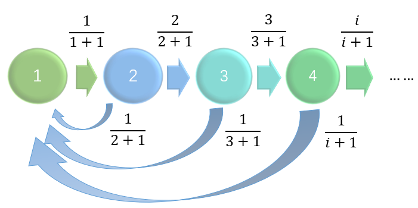

<!DOCTYPE html>


<html lang="en">


<head>
  <meta charset="utf-8" />
    
  <meta name="description" content="I am a second PhD student at Renmin University of China. My research interests include federated learning, high dimensional data, machine learning, and optimization. I am currently working on latent graph learning in Prof.Renjie Liao&#39;s group." />
  
  <meta name="viewport" content="width=device-width, initial-scale=1, maximum-scale=1" />
  <title>
    Discrete Markov Chains |  Welcome to XueYu&#39;s Blog
  </title>
  <meta name="generator" content="hexo-theme-ayer">
  
  <link rel="shortcut icon" href="/favicon.ico" />
  
  
<link rel="stylesheet" href="/dist/main.css">

  
<link rel="stylesheet" href="https://cdn.jsdelivr.net/gh/Shen-Yu/cdn/css/remixicon.min.css">

  
<link rel="stylesheet" href="/css/custom.css">

  
  
<script src="https://cdn.jsdelivr.net/npm/pace-js@1.0.2/pace.min.js"></script>

  
  

  

<link rel="alternate" href="/atom.xml" title="Welcome to XueYu's Blog" type="application/atom+xml">

<style>.github-emoji { position: relative; display: inline-block; width: 1.2em; min-height: 1.2em; overflow: hidden; vertical-align: top; color: transparent; }  .github-emoji > span { position: relative; z-index: 10; }  .github-emoji img, .github-emoji .fancybox { margin: 0 !important; padding: 0 !important; border: none !important; outline: none !important; text-decoration: none !important; user-select: none !important; cursor: auto !important; }  .github-emoji img { height: 1.2em !important; width: 1.2em !important; position: absolute !important; left: 50% !important; top: 50% !important; transform: translate(-50%, -50%) !important; user-select: none !important; cursor: auto !important; } .github-emoji-fallback { color: inherit; } .github-emoji-fallback img { opacity: 0 !important; }</style>
<link href="https://cdn.bootcss.com/KaTeX/0.11.1/katex.min.css" rel="stylesheet" /></head>

</html>

<body>
  <div id="app">
    
      
    <main class="content on">
      <section class="outer">
  <article
  id="post-Markov Chains"
  class="article article-type-post"
  itemscope
  itemprop="blogPost"
  data-scroll-reveal
>
  <div class="article-inner">
    
    <header class="article-header">
       
<h1 class="article-title sea-center" style="border-left:0" itemprop="name">
  Discrete Markov Chains
</h1>
 

    </header>
     
    <div class="article-meta">
      <a href="/2023/07/12/Markov%20Chains/" class="article-date">
  <time datetime="2023-07-13T01:00:00.000Z" itemprop="datePublished">2023-07-12</time>
</a> 
  <div class="article-category">
    <a class="article-category-link" href="/categories/Reading-Group/">Reading Group</a>
  </div>
  
<div class="word_count">
    <span class="post-time">
        <span class="post-meta-item-icon">
            <i class="ri-quill-pen-line"></i>
            <span class="post-meta-item-text"> Word count:</span>
            <span class="post-count">1.5k</span>
        </span>
    </span>

    <span class="post-time">
        &nbsp; | &nbsp;
        <span class="post-meta-item-icon">
            <i class="ri-book-open-line"></i>
            <span class="post-meta-item-text"> Reading time≈</span>
            <span class="post-count">9 min</span>
        </span>
    </span>
</div>
 
    </div>
      
    <div class="article-entry" itemprop="articleBody">
       
  <h1>Markov Chains: Definitions and Representations</h1>
<p>A stochastic process <span class="katex"><span class="katex-mathml"><math xmlns="http://www.w3.org/1998/Math/MathML"><semantics><mrow><mi>X</mi><mo>=</mo><mo stretchy="false">{</mo><mi>x</mi><mo stretchy="false">(</mo><mi>t</mi><mo stretchy="false">)</mo><mo>:</mo><mi>t</mi><mo>∈</mo><mi>T</mi><mo stretchy="false">}</mo></mrow><annotation encoding="application/x-tex">X = \{ x(t): t\in T\}</annotation></semantics></math></span><span class="katex-html" aria-hidden="true"><span class="base"><span class="strut" style="height:0.68333em;vertical-align:0em;"></span><span class="mord mathdefault" style="margin-right:0.07847em;">X</span><span class="mspace" style="margin-right:0.2777777777777778em;"></span><span class="mrel">=</span><span class="mspace" style="margin-right:0.2777777777777778em;"></span></span><span class="base"><span class="strut" style="height:1em;vertical-align:-0.25em;"></span><span class="mopen">{</span><span class="mord mathdefault">x</span><span class="mopen">(</span><span class="mord mathdefault">t</span><span class="mclose">)</span><span class="mspace" style="margin-right:0.2777777777777778em;"></span><span class="mrel">:</span><span class="mspace" style="margin-right:0.2777777777777778em;"></span></span><span class="base"><span class="strut" style="height:0.65418em;vertical-align:-0.0391em;"></span><span class="mord mathdefault">t</span><span class="mspace" style="margin-right:0.2777777777777778em;"></span><span class="mrel">∈</span><span class="mspace" style="margin-right:0.2777777777777778em;"></span></span><span class="base"><span class="strut" style="height:1em;vertical-align:-0.25em;"></span><span class="mord mathdefault" style="margin-right:0.13889em;">T</span><span class="mclose">}</span></span></span></span> is a collection of random variables.</p>
<p>There are two elements:</p>
<ul>
<li>Time <span class="katex"><span class="katex-mathml"><math xmlns="http://www.w3.org/1998/Math/MathML"><semantics><mrow><mi>t</mi></mrow><annotation encoding="application/x-tex">t</annotation></semantics></math></span><span class="katex-html" aria-hidden="true"><span class="base"><span class="strut" style="height:0.61508em;vertical-align:0em;"></span><span class="mord mathdefault">t</span></span></span></span>:
<ul>
<li>discrete time (T is a countably infinite set; under this case, we call ‘Markov chain’)</li>
<li>continuous time (under this case, we call ‘Markov process’)</li>
</ul>
</li>
<li>Space <span class="katex"><span class="katex-mathml"><math xmlns="http://www.w3.org/1998/Math/MathML"><semantics><mrow><mi mathvariant="normal">Ω</mi></mrow><annotation encoding="application/x-tex">\Omega</annotation></semantics></math></span><span class="katex-html" aria-hidden="true"><span class="base"><span class="strut" style="height:0.68333em;vertical-align:0em;"></span><span class="mord">Ω</span></span></span></span>:
<ul>
<li>discrete space (X_{t} comes from a countably infinite set)</li>
<li>continuous space.</li>
</ul>
</li>
</ul>
<p>Markov chain is a <strong>discrete-time</strong> process for which the future behaviour, given the past and the present, only depends on the present and not on the past.</p>
<p>Markov process is the <strong>continuous-time</strong> version of a Markov chain.</p>
<blockquote>
<p>Definition 1.[Markov chain] A discrete time stochastic process $ X_0, X_1, X_2, $. . . is a Markov chain if</p>
</blockquote>
<p class="katex-block"><span class="katex-display"><span class="katex"><span class="katex-mathml"><math xmlns="http://www.w3.org/1998/Math/MathML"><semantics><mrow><mi>P</mi><mo stretchy="false">(</mo><msub><mi>X</mi><mi>t</mi></msub><mo>=</mo><msub><mi>a</mi><mi>t</mi></msub><mi mathvariant="normal">∣</mi><msub><mi>X</mi><mrow><mi>t</mi><mo>−</mo><mn>1</mn></mrow></msub><mo>=</mo><msub><mi>a</mi><mrow><mi>t</mi><mo>−</mo><mn>1</mn></mrow></msub><mo separator="true">,</mo><msub><mi>X</mi><mrow><mi>t</mi><mo>−</mo><mn>2</mn></mrow></msub><mo>=</mo><msub><mi>a</mi><mrow><mi>t</mi><mo>−</mo><mn>2</mn></mrow></msub><mo separator="true">,</mo><mi mathvariant="normal">.</mi><mi mathvariant="normal">.</mi><mi mathvariant="normal">.</mi><mo separator="true">,</mo><msub><mi>X</mi><mn>0</mn></msub><mo>=</mo><msub><mi>a</mi><mn>0</mn></msub><mo stretchy="false">)</mo><mo>=</mo><mi>P</mi><mo stretchy="false">(</mo><msub><mi>X</mi><mi>t</mi></msub><mo>=</mo><msub><mi>a</mi><mi>t</mi></msub><mi mathvariant="normal">∣</mi><msub><mi>X</mi><mrow><mi>t</mi><mo>−</mo><mn>1</mn></mrow></msub><mo>=</mo><msub><mi>a</mi><mrow><mi>t</mi><mo>−</mo><mn>1</mn></mrow></msub><mo stretchy="false">)</mo><mo>=</mo><msub><mi>P</mi><mrow><msub><mi>a</mi><mrow><mi>t</mi><mo>−</mo><mn>1</mn></mrow></msub><mo separator="true">,</mo><msub><mi>a</mi><mi>t</mi></msub></mrow></msub></mrow><annotation encoding="application/x-tex">P(X_{t} = a_t | X_{t-1} = a_{t-1}, X_{t-2} = a_{t-2}, ..., X_0 = a_0) = P(X_{t} = a_t | X_{t-1} = a_{t-1}) = P_{a_{t-1},  a_{t}}
</annotation></semantics></math></span><span class="katex-html" aria-hidden="true"><span class="base"><span class="strut" style="height:1em;vertical-align:-0.25em;"></span><span class="mord mathdefault" style="margin-right:0.13889em;">P</span><span class="mopen">(</span><span class="mord"><span class="mord mathdefault" style="margin-right:0.07847em;">X</span><span class="msupsub"><span class="vlist-t vlist-t2"><span class="vlist-r"><span class="vlist" style="height:0.2805559999999999em;"><span style="top:-2.5500000000000003em;margin-left:-0.07847em;margin-right:0.05em;"><span class="pstrut" style="height:2.7em;"></span><span class="sizing reset-size6 size3 mtight"><span class="mord mtight"><span class="mord mathdefault mtight">t</span></span></span></span></span><span class="vlist-s">​</span></span><span class="vlist-r"><span class="vlist" style="height:0.15em;"><span></span></span></span></span></span></span><span class="mspace" style="margin-right:0.2777777777777778em;"></span><span class="mrel">=</span><span class="mspace" style="margin-right:0.2777777777777778em;"></span></span><span class="base"><span class="strut" style="height:1em;vertical-align:-0.25em;"></span><span class="mord"><span class="mord mathdefault">a</span><span class="msupsub"><span class="vlist-t vlist-t2"><span class="vlist-r"><span class="vlist" style="height:0.2805559999999999em;"><span style="top:-2.5500000000000003em;margin-left:0em;margin-right:0.05em;"><span class="pstrut" style="height:2.7em;"></span><span class="sizing reset-size6 size3 mtight"><span class="mord mathdefault mtight">t</span></span></span></span><span class="vlist-s">​</span></span><span class="vlist-r"><span class="vlist" style="height:0.15em;"><span></span></span></span></span></span></span><span class="mord">∣</span><span class="mord"><span class="mord mathdefault" style="margin-right:0.07847em;">X</span><span class="msupsub"><span class="vlist-t vlist-t2"><span class="vlist-r"><span class="vlist" style="height:0.301108em;"><span style="top:-2.5500000000000003em;margin-left:-0.07847em;margin-right:0.05em;"><span class="pstrut" style="height:2.7em;"></span><span class="sizing reset-size6 size3 mtight"><span class="mord mtight"><span class="mord mathdefault mtight">t</span><span class="mbin mtight">−</span><span class="mord mtight">1</span></span></span></span></span><span class="vlist-s">​</span></span><span class="vlist-r"><span class="vlist" style="height:0.208331em;"><span></span></span></span></span></span></span><span class="mspace" style="margin-right:0.2777777777777778em;"></span><span class="mrel">=</span><span class="mspace" style="margin-right:0.2777777777777778em;"></span></span><span class="base"><span class="strut" style="height:0.891661em;vertical-align:-0.208331em;"></span><span class="mord"><span class="mord mathdefault">a</span><span class="msupsub"><span class="vlist-t vlist-t2"><span class="vlist-r"><span class="vlist" style="height:0.301108em;"><span style="top:-2.5500000000000003em;margin-left:0em;margin-right:0.05em;"><span class="pstrut" style="height:2.7em;"></span><span class="sizing reset-size6 size3 mtight"><span class="mord mtight"><span class="mord mathdefault mtight">t</span><span class="mbin mtight">−</span><span class="mord mtight">1</span></span></span></span></span><span class="vlist-s">​</span></span><span class="vlist-r"><span class="vlist" style="height:0.208331em;"><span></span></span></span></span></span></span><span class="mpunct">,</span><span class="mspace" style="margin-right:0.16666666666666666em;"></span><span class="mord"><span class="mord mathdefault" style="margin-right:0.07847em;">X</span><span class="msupsub"><span class="vlist-t vlist-t2"><span class="vlist-r"><span class="vlist" style="height:0.301108em;"><span style="top:-2.5500000000000003em;margin-left:-0.07847em;margin-right:0.05em;"><span class="pstrut" style="height:2.7em;"></span><span class="sizing reset-size6 size3 mtight"><span class="mord mtight"><span class="mord mathdefault mtight">t</span><span class="mbin mtight">−</span><span class="mord mtight">2</span></span></span></span></span><span class="vlist-s">​</span></span><span class="vlist-r"><span class="vlist" style="height:0.208331em;"><span></span></span></span></span></span></span><span class="mspace" style="margin-right:0.2777777777777778em;"></span><span class="mrel">=</span><span class="mspace" style="margin-right:0.2777777777777778em;"></span></span><span class="base"><span class="strut" style="height:0.891661em;vertical-align:-0.208331em;"></span><span class="mord"><span class="mord mathdefault">a</span><span class="msupsub"><span class="vlist-t vlist-t2"><span class="vlist-r"><span class="vlist" style="height:0.301108em;"><span style="top:-2.5500000000000003em;margin-left:0em;margin-right:0.05em;"><span class="pstrut" style="height:2.7em;"></span><span class="sizing reset-size6 size3 mtight"><span class="mord mtight"><span class="mord mathdefault mtight">t</span><span class="mbin mtight">−</span><span class="mord mtight">2</span></span></span></span></span><span class="vlist-s">​</span></span><span class="vlist-r"><span class="vlist" style="height:0.208331em;"><span></span></span></span></span></span></span><span class="mpunct">,</span><span class="mspace" style="margin-right:0.16666666666666666em;"></span><span class="mord">.</span><span class="mord">.</span><span class="mord">.</span><span class="mpunct">,</span><span class="mspace" style="margin-right:0.16666666666666666em;"></span><span class="mord"><span class="mord mathdefault" style="margin-right:0.07847em;">X</span><span class="msupsub"><span class="vlist-t vlist-t2"><span class="vlist-r"><span class="vlist" style="height:0.30110799999999993em;"><span style="top:-2.5500000000000003em;margin-left:-0.07847em;margin-right:0.05em;"><span class="pstrut" style="height:2.7em;"></span><span class="sizing reset-size6 size3 mtight"><span class="mord mtight">0</span></span></span></span><span class="vlist-s">​</span></span><span class="vlist-r"><span class="vlist" style="height:0.15em;"><span></span></span></span></span></span></span><span class="mspace" style="margin-right:0.2777777777777778em;"></span><span class="mrel">=</span><span class="mspace" style="margin-right:0.2777777777777778em;"></span></span><span class="base"><span class="strut" style="height:1em;vertical-align:-0.25em;"></span><span class="mord"><span class="mord mathdefault">a</span><span class="msupsub"><span class="vlist-t vlist-t2"><span class="vlist-r"><span class="vlist" style="height:0.30110799999999993em;"><span style="top:-2.5500000000000003em;margin-left:0em;margin-right:0.05em;"><span class="pstrut" style="height:2.7em;"></span><span class="sizing reset-size6 size3 mtight"><span class="mord mtight">0</span></span></span></span><span class="vlist-s">​</span></span><span class="vlist-r"><span class="vlist" style="height:0.15em;"><span></span></span></span></span></span></span><span class="mclose">)</span><span class="mspace" style="margin-right:0.2777777777777778em;"></span><span class="mrel">=</span><span class="mspace" style="margin-right:0.2777777777777778em;"></span></span><span class="base"><span class="strut" style="height:1em;vertical-align:-0.25em;"></span><span class="mord mathdefault" style="margin-right:0.13889em;">P</span><span class="mopen">(</span><span class="mord"><span class="mord mathdefault" style="margin-right:0.07847em;">X</span><span class="msupsub"><span class="vlist-t vlist-t2"><span class="vlist-r"><span class="vlist" style="height:0.2805559999999999em;"><span style="top:-2.5500000000000003em;margin-left:-0.07847em;margin-right:0.05em;"><span class="pstrut" style="height:2.7em;"></span><span class="sizing reset-size6 size3 mtight"><span class="mord mtight"><span class="mord mathdefault mtight">t</span></span></span></span></span><span class="vlist-s">​</span></span><span class="vlist-r"><span class="vlist" style="height:0.15em;"><span></span></span></span></span></span></span><span class="mspace" style="margin-right:0.2777777777777778em;"></span><span class="mrel">=</span><span class="mspace" style="margin-right:0.2777777777777778em;"></span></span><span class="base"><span class="strut" style="height:1em;vertical-align:-0.25em;"></span><span class="mord"><span class="mord mathdefault">a</span><span class="msupsub"><span class="vlist-t vlist-t2"><span class="vlist-r"><span class="vlist" style="height:0.2805559999999999em;"><span style="top:-2.5500000000000003em;margin-left:0em;margin-right:0.05em;"><span class="pstrut" style="height:2.7em;"></span><span class="sizing reset-size6 size3 mtight"><span class="mord mathdefault mtight">t</span></span></span></span><span class="vlist-s">​</span></span><span class="vlist-r"><span class="vlist" style="height:0.15em;"><span></span></span></span></span></span></span><span class="mord">∣</span><span class="mord"><span class="mord mathdefault" style="margin-right:0.07847em;">X</span><span class="msupsub"><span class="vlist-t vlist-t2"><span class="vlist-r"><span class="vlist" style="height:0.301108em;"><span style="top:-2.5500000000000003em;margin-left:-0.07847em;margin-right:0.05em;"><span class="pstrut" style="height:2.7em;"></span><span class="sizing reset-size6 size3 mtight"><span class="mord mtight"><span class="mord mathdefault mtight">t</span><span class="mbin mtight">−</span><span class="mord mtight">1</span></span></span></span></span><span class="vlist-s">​</span></span><span class="vlist-r"><span class="vlist" style="height:0.208331em;"><span></span></span></span></span></span></span><span class="mspace" style="margin-right:0.2777777777777778em;"></span><span class="mrel">=</span><span class="mspace" style="margin-right:0.2777777777777778em;"></span></span><span class="base"><span class="strut" style="height:1em;vertical-align:-0.25em;"></span><span class="mord"><span class="mord mathdefault">a</span><span class="msupsub"><span class="vlist-t vlist-t2"><span class="vlist-r"><span class="vlist" style="height:0.301108em;"><span style="top:-2.5500000000000003em;margin-left:0em;margin-right:0.05em;"><span class="pstrut" style="height:2.7em;"></span><span class="sizing reset-size6 size3 mtight"><span class="mord mtight"><span class="mord mathdefault mtight">t</span><span class="mbin mtight">−</span><span class="mord mtight">1</span></span></span></span></span><span class="vlist-s">​</span></span><span class="vlist-r"><span class="vlist" style="height:0.208331em;"><span></span></span></span></span></span></span><span class="mclose">)</span><span class="mspace" style="margin-right:0.2777777777777778em;"></span><span class="mrel">=</span><span class="mspace" style="margin-right:0.2777777777777778em;"></span></span><span class="base"><span class="strut" style="height:0.975095em;vertical-align:-0.291765em;"></span><span class="mord"><span class="mord mathdefault" style="margin-right:0.13889em;">P</span><span class="msupsub"><span class="vlist-t vlist-t2"><span class="vlist-r"><span class="vlist" style="height:0.15139200000000003em;"><span style="top:-2.5500000000000003em;margin-left:-0.13889em;margin-right:0.05em;"><span class="pstrut" style="height:2.7em;"></span><span class="sizing reset-size6 size3 mtight"><span class="mord mtight"><span class="mord mtight"><span class="mord mathdefault mtight">a</span><span class="msupsub"><span class="vlist-t vlist-t2"><span class="vlist-r"><span class="vlist" style="height:0.3173142857142857em;"><span style="top:-2.357em;margin-left:0em;margin-right:0.07142857142857144em;"><span class="pstrut" style="height:2.5em;"></span><span class="sizing reset-size3 size1 mtight"><span class="mord mtight"><span class="mord mathdefault mtight">t</span><span class="mbin mtight">−</span><span class="mord mtight">1</span></span></span></span></span><span class="vlist-s">​</span></span><span class="vlist-r"><span class="vlist" style="height:0.20252142857142857em;"><span></span></span></span></span></span></span><span class="mpunct mtight">,</span><span class="mord mtight"><span class="mord mathdefault mtight">a</span><span class="msupsub"><span class="vlist-t vlist-t2"><span class="vlist-r"><span class="vlist" style="height:0.29634285714285713em;"><span style="top:-2.357em;margin-left:0em;margin-right:0.07142857142857144em;"><span class="pstrut" style="height:2.5em;"></span><span class="sizing reset-size3 size1 mtight"><span class="mord mtight"><span class="mord mathdefault mtight">t</span></span></span></span></span><span class="vlist-s">​</span></span><span class="vlist-r"><span class="vlist" style="height:0.143em;"><span></span></span></span></span></span></span></span></span></span></span><span class="vlist-s">​</span></span><span class="vlist-r"><span class="vlist" style="height:0.291765em;"><span></span></span></span></span></span></span></span></span></span></span></p>
<p>Remark 1: This is time-homogeneous markov chain, for <span class="katex"><span class="katex-mathml"><math xmlns="http://www.w3.org/1998/Math/MathML"><semantics><mrow><mi mathvariant="normal">∀</mi><mi>t</mi></mrow><annotation encoding="application/x-tex">\forall t</annotation></semantics></math></span><span class="katex-html" aria-hidden="true"><span class="base"><span class="strut" style="height:0.69444em;vertical-align:0em;"></span><span class="mord">∀</span><span class="mord mathdefault">t</span></span></span></span>, for <span class="katex"><span class="katex-mathml"><math xmlns="http://www.w3.org/1998/Math/MathML"><semantics><mrow><mi mathvariant="normal">∀</mi><msub><mi>a</mi><mrow><mi>t</mi><mo>−</mo><mn>1</mn></mrow></msub><mo separator="true">,</mo><msub><mi>a</mi><mi>t</mi></msub><mo>∈</mo><mi mathvariant="normal">Ω</mi></mrow><annotation encoding="application/x-tex">\forall a_{t-1}, a_{t} \in \Omega</annotation></semantics></math></span><span class="katex-html" aria-hidden="true"><span class="base"><span class="strut" style="height:0.902771em;vertical-align:-0.208331em;"></span><span class="mord">∀</span><span class="mord"><span class="mord mathdefault">a</span><span class="msupsub"><span class="vlist-t vlist-t2"><span class="vlist-r"><span class="vlist" style="height:0.301108em;"><span style="top:-2.5500000000000003em;margin-left:0em;margin-right:0.05em;"><span class="pstrut" style="height:2.7em;"></span><span class="sizing reset-size6 size3 mtight"><span class="mord mtight"><span class="mord mathdefault mtight">t</span><span class="mbin mtight">−</span><span class="mord mtight">1</span></span></span></span></span><span class="vlist-s">​</span></span><span class="vlist-r"><span class="vlist" style="height:0.208331em;"><span></span></span></span></span></span></span><span class="mpunct">,</span><span class="mspace" style="margin-right:0.16666666666666666em;"></span><span class="mord"><span class="mord mathdefault">a</span><span class="msupsub"><span class="vlist-t vlist-t2"><span class="vlist-r"><span class="vlist" style="height:0.2805559999999999em;"><span style="top:-2.5500000000000003em;margin-left:0em;margin-right:0.05em;"><span class="pstrut" style="height:2.7em;"></span><span class="sizing reset-size6 size3 mtight"><span class="mord mtight"><span class="mord mathdefault mtight">t</span></span></span></span></span><span class="vlist-s">​</span></span><span class="vlist-r"><span class="vlist" style="height:0.15em;"><span></span></span></span></span></span></span><span class="mspace" style="margin-right:0.2777777777777778em;"></span><span class="mrel">∈</span><span class="mspace" style="margin-right:0.2777777777777778em;"></span></span><span class="base"><span class="strut" style="height:0.68333em;vertical-align:0em;"></span><span class="mord">Ω</span></span></span></span>, the transition probability <span class="katex"><span class="katex-mathml"><math xmlns="http://www.w3.org/1998/Math/MathML"><semantics><mrow><msub><mi>P</mi><mrow><msub><mi>a</mi><mrow><mi>t</mi><mo>−</mo><mn>1</mn></mrow></msub><mo separator="true">,</mo><msub><mi>a</mi><mi>t</mi></msub></mrow></msub></mrow><annotation encoding="application/x-tex">P_{a_{t-1}, a_{t} }</annotation></semantics></math></span><span class="katex-html" aria-hidden="true"><span class="base"><span class="strut" style="height:0.975095em;vertical-align:-0.291765em;"></span><span class="mord"><span class="mord mathdefault" style="margin-right:0.13889em;">P</span><span class="msupsub"><span class="vlist-t vlist-t2"><span class="vlist-r"><span class="vlist" style="height:0.15139200000000003em;"><span style="top:-2.5500000000000003em;margin-left:-0.13889em;margin-right:0.05em;"><span class="pstrut" style="height:2.7em;"></span><span class="sizing reset-size6 size3 mtight"><span class="mord mtight"><span class="mord mtight"><span class="mord mathdefault mtight">a</span><span class="msupsub"><span class="vlist-t vlist-t2"><span class="vlist-r"><span class="vlist" style="height:0.3173142857142857em;"><span style="top:-2.357em;margin-left:0em;margin-right:0.07142857142857144em;"><span class="pstrut" style="height:2.5em;"></span><span class="sizing reset-size3 size1 mtight"><span class="mord mtight"><span class="mord mathdefault mtight">t</span><span class="mbin mtight">−</span><span class="mord mtight">1</span></span></span></span></span><span class="vlist-s">​</span></span><span class="vlist-r"><span class="vlist" style="height:0.20252142857142857em;"><span></span></span></span></span></span></span><span class="mpunct mtight">,</span><span class="mord mtight"><span class="mord mathdefault mtight">a</span><span class="msupsub"><span class="vlist-t vlist-t2"><span class="vlist-r"><span class="vlist" style="height:0.29634285714285713em;"><span style="top:-2.357em;margin-left:0em;margin-right:0.07142857142857144em;"><span class="pstrut" style="height:2.5em;"></span><span class="sizing reset-size3 size1 mtight"><span class="mord mtight"><span class="mord mathdefault mtight">t</span></span></span></span></span><span class="vlist-s">​</span></span><span class="vlist-r"><span class="vlist" style="height:0.143em;"><span></span></span></span></span></span></span></span></span></span></span><span class="vlist-s">​</span></span><span class="vlist-r"><span class="vlist" style="height:0.291765em;"><span></span></span></span></span></span></span></span></span></span> is the same.</p>
<p>Remark 2: In DDPM, it is not a  time-homogeneous chain, as the transition probability at t is obtained by a network(t).</p>
<p>The state <span class="katex"><span class="katex-mathml"><math xmlns="http://www.w3.org/1998/Math/MathML"><semantics><mrow><msub><mi>X</mi><mi>t</mi></msub></mrow><annotation encoding="application/x-tex">X_{t}</annotation></semantics></math></span><span class="katex-html" aria-hidden="true"><span class="base"><span class="strut" style="height:0.83333em;vertical-align:-0.15em;"></span><span class="mord"><span class="mord mathdefault" style="margin-right:0.07847em;">X</span><span class="msupsub"><span class="vlist-t vlist-t2"><span class="vlist-r"><span class="vlist" style="height:0.2805559999999999em;"><span style="top:-2.5500000000000003em;margin-left:-0.07847em;margin-right:0.05em;"><span class="pstrut" style="height:2.7em;"></span><span class="sizing reset-size6 size3 mtight"><span class="mord mtight"><span class="mord mathdefault mtight">t</span></span></span></span></span><span class="vlist-s">​</span></span><span class="vlist-r"><span class="vlist" style="height:0.15em;"><span></span></span></span></span></span></span></span></span></span> depends on the previous state <span class="katex"><span class="katex-mathml"><math xmlns="http://www.w3.org/1998/Math/MathML"><semantics><mrow><msub><mi>X</mi><mrow><mi>t</mi><mo>−</mo><mn>1</mn></mrow></msub></mrow><annotation encoding="application/x-tex">X_{t-1}</annotation></semantics></math></span><span class="katex-html" aria-hidden="true"><span class="base"><span class="strut" style="height:0.891661em;vertical-align:-0.208331em;"></span><span class="mord"><span class="mord mathdefault" style="margin-right:0.07847em;">X</span><span class="msupsub"><span class="vlist-t vlist-t2"><span class="vlist-r"><span class="vlist" style="height:0.301108em;"><span style="top:-2.5500000000000003em;margin-left:-0.07847em;margin-right:0.05em;"><span class="pstrut" style="height:2.7em;"></span><span class="sizing reset-size6 size3 mtight"><span class="mord mtight"><span class="mord mathdefault mtight">t</span><span class="mbin mtight">−</span><span class="mord mtight">1</span></span></span></span></span><span class="vlist-s">​</span></span><span class="vlist-r"><span class="vlist" style="height:0.208331em;"><span></span></span></span></span></span></span></span></span></span> but is independent of the particular history <span class="katex"><span class="katex-mathml"><math xmlns="http://www.w3.org/1998/Math/MathML"><semantics><mrow><msub><mi>X</mi><mrow><mi>t</mi><mo>−</mo><mn>2</mn></mrow></msub><mo separator="true">,</mo><msub><mi>X</mi><mrow><mi>t</mi><mo>−</mo><mn>3</mn></mrow></msub><mo separator="true">,</mo><mi mathvariant="normal">.</mi><mi mathvariant="normal">.</mi><mi mathvariant="normal">.</mi></mrow><annotation encoding="application/x-tex">X_{t-2}, X_{t-3},...</annotation></semantics></math></span><span class="katex-html" aria-hidden="true"><span class="base"><span class="strut" style="height:0.891661em;vertical-align:-0.208331em;"></span><span class="mord"><span class="mord mathdefault" style="margin-right:0.07847em;">X</span><span class="msupsub"><span class="vlist-t vlist-t2"><span class="vlist-r"><span class="vlist" style="height:0.301108em;"><span style="top:-2.5500000000000003em;margin-left:-0.07847em;margin-right:0.05em;"><span class="pstrut" style="height:2.7em;"></span><span class="sizing reset-size6 size3 mtight"><span class="mord mtight"><span class="mord mathdefault mtight">t</span><span class="mbin mtight">−</span><span class="mord mtight">2</span></span></span></span></span><span class="vlist-s">​</span></span><span class="vlist-r"><span class="vlist" style="height:0.208331em;"><span></span></span></span></span></span></span><span class="mpunct">,</span><span class="mspace" style="margin-right:0.16666666666666666em;"></span><span class="mord"><span class="mord mathdefault" style="margin-right:0.07847em;">X</span><span class="msupsub"><span class="vlist-t vlist-t2"><span class="vlist-r"><span class="vlist" style="height:0.301108em;"><span style="top:-2.5500000000000003em;margin-left:-0.07847em;margin-right:0.05em;"><span class="pstrut" style="height:2.7em;"></span><span class="sizing reset-size6 size3 mtight"><span class="mord mtight"><span class="mord mathdefault mtight">t</span><span class="mbin mtight">−</span><span class="mord mtight">3</span></span></span></span></span><span class="vlist-s">​</span></span><span class="vlist-r"><span class="vlist" style="height:0.208331em;"><span></span></span></span></span></span></span><span class="mpunct">,</span><span class="mspace" style="margin-right:0.16666666666666666em;"></span><span class="mord">.</span><span class="mord">.</span><span class="mord">.</span></span></span></span>. This is called the <strong>Markov property</strong> or <strong>memoryless property</strong>.</p>
<p>The Markov property does not imply that <span class="katex"><span class="katex-mathml"><math xmlns="http://www.w3.org/1998/Math/MathML"><semantics><mrow><msub><mi>X</mi><mi>t</mi></msub></mrow><annotation encoding="application/x-tex">X_{t}</annotation></semantics></math></span><span class="katex-html" aria-hidden="true"><span class="base"><span class="strut" style="height:0.83333em;vertical-align:-0.15em;"></span><span class="mord"><span class="mord mathdefault" style="margin-right:0.07847em;">X</span><span class="msupsub"><span class="vlist-t vlist-t2"><span class="vlist-r"><span class="vlist" style="height:0.2805559999999999em;"><span style="top:-2.5500000000000003em;margin-left:-0.07847em;margin-right:0.05em;"><span class="pstrut" style="height:2.7em;"></span><span class="sizing reset-size6 size3 mtight"><span class="mord mtight"><span class="mord mathdefault mtight">t</span></span></span></span></span><span class="vlist-s">​</span></span><span class="vlist-r"><span class="vlist" style="height:0.15em;"><span></span></span></span></span></span></span></span></span></span> is independent of the random variables <span class="katex"><span class="katex-mathml"><math xmlns="http://www.w3.org/1998/Math/MathML"><semantics><mrow><msub><mi>X</mi><mn>0</mn></msub></mrow><annotation encoding="application/x-tex">X_{0}</annotation></semantics></math></span><span class="katex-html" aria-hidden="true"><span class="base"><span class="strut" style="height:0.83333em;vertical-align:-0.15em;"></span><span class="mord"><span class="mord mathdefault" style="margin-right:0.07847em;">X</span><span class="msupsub"><span class="vlist-t vlist-t2"><span class="vlist-r"><span class="vlist" style="height:0.30110799999999993em;"><span style="top:-2.5500000000000003em;margin-left:-0.07847em;margin-right:0.05em;"><span class="pstrut" style="height:2.7em;"></span><span class="sizing reset-size6 size3 mtight"><span class="mord mtight"><span class="mord mtight">0</span></span></span></span></span><span class="vlist-s">​</span></span><span class="vlist-r"><span class="vlist" style="height:0.15em;"><span></span></span></span></span></span></span></span></span></span>, <span class="katex"><span class="katex-mathml"><math xmlns="http://www.w3.org/1998/Math/MathML"><semantics><mrow><msub><mi>X</mi><mn>1</mn></msub></mrow><annotation encoding="application/x-tex">X_{1}</annotation></semantics></math></span><span class="katex-html" aria-hidden="true"><span class="base"><span class="strut" style="height:0.83333em;vertical-align:-0.15em;"></span><span class="mord"><span class="mord mathdefault" style="margin-right:0.07847em;">X</span><span class="msupsub"><span class="vlist-t vlist-t2"><span class="vlist-r"><span class="vlist" style="height:0.30110799999999993em;"><span style="top:-2.5500000000000003em;margin-left:-0.07847em;margin-right:0.05em;"><span class="pstrut" style="height:2.7em;"></span><span class="sizing reset-size6 size3 mtight"><span class="mord mtight"><span class="mord mtight">1</span></span></span></span></span><span class="vlist-s">​</span></span><span class="vlist-r"><span class="vlist" style="height:0.15em;"><span></span></span></span></span></span></span></span></span></span>,…, <span class="katex"><span class="katex-mathml"><math xmlns="http://www.w3.org/1998/Math/MathML"><semantics><mrow><msub><mi>X</mi><mrow><mi>t</mi><mo>−</mo><mn>2</mn></mrow></msub></mrow><annotation encoding="application/x-tex">X_{t-2}</annotation></semantics></math></span><span class="katex-html" aria-hidden="true"><span class="base"><span class="strut" style="height:0.891661em;vertical-align:-0.208331em;"></span><span class="mord"><span class="mord mathdefault" style="margin-right:0.07847em;">X</span><span class="msupsub"><span class="vlist-t vlist-t2"><span class="vlist-r"><span class="vlist" style="height:0.301108em;"><span style="top:-2.5500000000000003em;margin-left:-0.07847em;margin-right:0.05em;"><span class="pstrut" style="height:2.7em;"></span><span class="sizing reset-size6 size3 mtight"><span class="mord mtight"><span class="mord mathdefault mtight">t</span><span class="mbin mtight">−</span><span class="mord mtight">2</span></span></span></span></span><span class="vlist-s">​</span></span><span class="vlist-r"><span class="vlist" style="height:0.208331em;"><span></span></span></span></span></span></span></span></span></span>; it just implies that <strong>any dependency of <span class="katex"><span class="katex-mathml"><math xmlns="http://www.w3.org/1998/Math/MathML"><semantics><mrow><msub><mi>X</mi><mi>t</mi></msub></mrow><annotation encoding="application/x-tex">X_{t}</annotation></semantics></math></span><span class="katex-html" aria-hidden="true"><span class="base"><span class="strut" style="height:0.83333em;vertical-align:-0.15em;"></span><span class="mord"><span class="mord mathdefault" style="margin-right:0.07847em;">X</span><span class="msupsub"><span class="vlist-t vlist-t2"><span class="vlist-r"><span class="vlist" style="height:0.2805559999999999em;"><span style="top:-2.5500000000000003em;margin-left:-0.07847em;margin-right:0.05em;"><span class="pstrut" style="height:2.7em;"></span><span class="sizing reset-size6 size3 mtight"><span class="mord mtight"><span class="mord mathdefault mtight">t</span></span></span></span></span><span class="vlist-s">​</span></span><span class="vlist-r"><span class="vlist" style="height:0.15em;"><span></span></span></span></span></span></span></span></span></span> on the past is captured in the value of <span class="katex"><span class="katex-mathml"><math xmlns="http://www.w3.org/1998/Math/MathML"><semantics><mrow><msub><mi>X</mi><mrow><mi>t</mi><mo>−</mo><mn>1</mn></mrow></msub></mrow><annotation encoding="application/x-tex">X_{t-1}</annotation></semantics></math></span><span class="katex-html" aria-hidden="true"><span class="base"><span class="strut" style="height:0.891661em;vertical-align:-0.208331em;"></span><span class="mord"><span class="mord mathdefault" style="margin-right:0.07847em;">X</span><span class="msupsub"><span class="vlist-t vlist-t2"><span class="vlist-r"><span class="vlist" style="height:0.301108em;"><span style="top:-2.5500000000000003em;margin-left:-0.07847em;margin-right:0.05em;"><span class="pstrut" style="height:2.7em;"></span><span class="sizing reset-size6 size3 mtight"><span class="mord mtight"><span class="mord mathdefault mtight">t</span><span class="mbin mtight">−</span><span class="mord mtight">1</span></span></span></span></span><span class="vlist-s">​</span></span><span class="vlist-r"><span class="vlist" style="height:0.208331em;"><span></span></span></span></span></span></span></span></span></span></strong>.</p>
<p>The Markov chain is <strong>uniquely</strong> defined by the one-step transition probability matrix P:</p>
<p class="katex-block"><span class="katex-display"><span class="katex"><span class="katex-mathml"><math xmlns="http://www.w3.org/1998/Math/MathML"><semantics><mrow><mi>P</mi><mo>=</mo><mrow><mo fence="true">(</mo><mtable rowspacing="0.15999999999999992em" columnspacing="1em"><mtr><mtd><mstyle scriptlevel="0" displaystyle="false"><msub><mi>P</mi><mrow><mn>0</mn><mo separator="true">,</mo><mn>0</mn></mrow></msub></mstyle></mtd><mtd><mstyle scriptlevel="0" displaystyle="false"><msub><mi>P</mi><mrow><mn>0</mn><mo separator="true">,</mo><mn>1</mn></mrow></msub></mstyle></mtd><mtd><mstyle scriptlevel="0" displaystyle="false"><mo lspace="0em" rspace="0em">⋯</mo></mstyle></mtd><mtd><mstyle scriptlevel="0" displaystyle="false"><msub><mi>P</mi><mrow><mn>0</mn><mo separator="true">,</mo><mi>j</mi></mrow></msub></mstyle></mtd><mtd><mstyle scriptlevel="0" displaystyle="false"><mo lspace="0em" rspace="0em">⋯</mo></mstyle></mtd></mtr><mtr><mtd><mstyle scriptlevel="0" displaystyle="false"><mi><mi mathvariant="normal">⋮</mi><mpadded height="+0em" voffset="0em"><mspace mathbackground="black" width="0em" height="1.5em"></mspace></mpadded></mi></mstyle></mtd><mtd><mstyle scriptlevel="0" displaystyle="false"><mi><mi mathvariant="normal">⋮</mi><mpadded height="+0em" voffset="0em"><mspace mathbackground="black" width="0em" height="1.5em"></mspace></mpadded></mi></mstyle></mtd><mtd><mstyle scriptlevel="0" displaystyle="false"><mo lspace="0em" rspace="0em">⋱</mo></mstyle></mtd><mtd><mstyle scriptlevel="0" displaystyle="false"><mi><mi mathvariant="normal">⋮</mi><mpadded height="+0em" voffset="0em"><mspace mathbackground="black" width="0em" height="1.5em"></mspace></mpadded></mi></mstyle></mtd><mtd><mstyle scriptlevel="0" displaystyle="false"><mi><mi mathvariant="normal">⋮</mi><mpadded height="+0em" voffset="0em"><mspace mathbackground="black" width="0em" height="1.5em"></mspace></mpadded></mi></mstyle></mtd></mtr><mtr><mtd><mstyle scriptlevel="0" displaystyle="false"><msub><mi>P</mi><mrow><mi>i</mi><mo separator="true">,</mo><mn>0</mn></mrow></msub></mstyle></mtd><mtd><mstyle scriptlevel="0" displaystyle="false"><msub><mi>P</mi><mrow><mi>i</mi><mo separator="true">,</mo><mn>1</mn></mrow></msub></mstyle></mtd><mtd><mstyle scriptlevel="0" displaystyle="false"><mo lspace="0em" rspace="0em">⋯</mo></mstyle></mtd><mtd><mstyle scriptlevel="0" displaystyle="false"><msub><mi>P</mi><mrow><mi>i</mi><mo separator="true">,</mo><mi>j</mi></mrow></msub></mstyle></mtd><mtd><mstyle scriptlevel="0" displaystyle="false"><mo lspace="0em" rspace="0em">⋯</mo></mstyle></mtd></mtr><mtr><mtd><mstyle scriptlevel="0" displaystyle="false"><mi><mi mathvariant="normal">⋮</mi><mpadded height="+0em" voffset="0em"><mspace mathbackground="black" width="0em" height="1.5em"></mspace></mpadded></mi></mstyle></mtd><mtd><mstyle scriptlevel="0" displaystyle="false"><mi><mi mathvariant="normal">⋮</mi><mpadded height="+0em" voffset="0em"><mspace mathbackground="black" width="0em" height="1.5em"></mspace></mpadded></mi></mstyle></mtd><mtd><mstyle scriptlevel="0" displaystyle="false"><mo lspace="0em" rspace="0em">⋱</mo></mstyle></mtd><mtd><mstyle scriptlevel="0" displaystyle="false"><mi><mi mathvariant="normal">⋮</mi><mpadded height="+0em" voffset="0em"><mspace mathbackground="black" width="0em" height="1.5em"></mspace></mpadded></mi></mstyle></mtd><mtd><mstyle scriptlevel="0" displaystyle="false"><mi><mi mathvariant="normal">⋮</mi><mpadded height="+0em" voffset="0em"><mspace mathbackground="black" width="0em" height="1.5em"></mspace></mpadded></mi></mstyle></mtd></mtr></mtable><mo fence="true">)</mo></mrow></mrow><annotation encoding="application/x-tex">P = 
\begin{pmatrix}
P_{0,0} &amp; P_{0, 1} &amp; \cdots &amp; P_{0, j} &amp; \cdots\\
\vdots &amp; \vdots &amp; \ddots &amp; \vdots&amp; \vdots\\
P_{i,0} &amp; P_{i, 1} &amp; \cdots &amp; P_{i, j} &amp; \cdots\\
\vdots &amp; \vdots &amp; \ddots &amp; \vdots&amp; \vdots\\
\end{pmatrix}
</annotation></semantics></math></span><span class="katex-html" aria-hidden="true"><span class="base"><span class="strut" style="height:0.68333em;vertical-align:0em;"></span><span class="mord mathdefault" style="margin-right:0.13889em;">P</span><span class="mspace" style="margin-right:0.2777777777777778em;"></span><span class="mrel">=</span><span class="mspace" style="margin-right:0.2777777777777778em;"></span></span><span class="base"><span class="strut" style="height:6.120000000000001em;vertical-align:-2.8100000000000005em;"></span><span class="minner"><span class="mopen"><span class="delimsizing mult"><span class="vlist-t vlist-t2"><span class="vlist-r"><span class="vlist" style="height:3.25004em;"><span style="top:-1.0499800000000006em;"><span class="pstrut" style="height:3.1550000000000002em;"></span><span class="delimsizinginner delim-size4"><span>⎝</span></span></span><span style="top:-2.1999900000000006em;"><span class="pstrut" style="height:3.1550000000000002em;"></span><span class="delimsizinginner delim-size4"><span>⎜</span></span></span><span style="top:-2.7950000000000004em;"><span class="pstrut" style="height:3.1550000000000002em;"></span><span class="delimsizinginner delim-size4"><span>⎜</span></span></span><span style="top:-3.39001em;"><span class="pstrut" style="height:3.1550000000000002em;"></span><span class="delimsizinginner delim-size4"><span>⎜</span></span></span><span style="top:-3.98502em;"><span class="pstrut" style="height:3.1550000000000002em;"></span><span class="delimsizinginner delim-size4"><span>⎜</span></span></span><span style="top:-4.01002em;"><span class="pstrut" style="height:3.1550000000000002em;"></span><span class="delimsizinginner delim-size4"><span>⎜</span></span></span><span style="top:-5.250039999999999em;"><span class="pstrut" style="height:3.1550000000000002em;"></span><span class="delimsizinginner delim-size4"><span>⎛</span></span></span></span><span class="vlist-s">​</span></span><span class="vlist-r"><span class="vlist" style="height:2.75004em;"><span></span></span></span></span></span></span><span class="mord"><span class="mtable"><span class="col-align-c"><span class="vlist-t vlist-t2"><span class="vlist-r"><span class="vlist" style="height:3.310000000000001em;"><span style="top:-6.1575000000000015em;"><span class="pstrut" style="height:3.6875em;"></span><span class="mord"><span class="mord"><span class="mord mathdefault" style="margin-right:0.13889em;">P</span><span class="msupsub"><span class="vlist-t vlist-t2"><span class="vlist-r"><span class="vlist" style="height:0.301108em;"><span style="top:-2.5500000000000003em;margin-left:-0.13889em;margin-right:0.05em;"><span class="pstrut" style="height:2.7em;"></span><span class="sizing reset-size6 size3 mtight"><span class="mord mtight"><span class="mord mtight">0</span><span class="mpunct mtight">,</span><span class="mord mtight">0</span></span></span></span></span><span class="vlist-s">​</span></span><span class="vlist-r"><span class="vlist" style="height:0.286108em;"><span></span></span></span></span></span></span></span></span><span style="top:-4.2975em;"><span class="pstrut" style="height:3.6875em;"></span><span class="mord"><span class="mord"><span class="mord">⋮</span><span class="mord rule" style="border-right-width:0em;border-top-width:1.5em;bottom:0em;"></span></span></span></span><span style="top:-3.0974999999999997em;"><span class="pstrut" style="height:3.6875em;"></span><span class="mord"><span class="mord"><span class="mord mathdefault" style="margin-right:0.13889em;">P</span><span class="msupsub"><span class="vlist-t vlist-t2"><span class="vlist-r"><span class="vlist" style="height:0.311664em;"><span style="top:-2.5500000000000003em;margin-left:-0.13889em;margin-right:0.05em;"><span class="pstrut" style="height:2.7em;"></span><span class="sizing reset-size6 size3 mtight"><span class="mord mtight"><span class="mord mathdefault mtight">i</span><span class="mpunct mtight">,</span><span class="mord mtight">0</span></span></span></span></span><span class="vlist-s">​</span></span><span class="vlist-r"><span class="vlist" style="height:0.286108em;"><span></span></span></span></span></span></span></span></span><span style="top:-1.2374999999999996em;"><span class="pstrut" style="height:3.6875em;"></span><span class="mord"><span class="mord"><span class="mord">⋮</span><span class="mord rule" style="border-right-width:0em;border-top-width:1.5em;bottom:0em;"></span></span></span></span></span><span class="vlist-s">​</span></span><span class="vlist-r"><span class="vlist" style="height:2.8100000000000005em;"><span></span></span></span></span></span><span class="arraycolsep" style="width:0.5em;"></span><span class="arraycolsep" style="width:0.5em;"></span><span class="col-align-c"><span class="vlist-t vlist-t2"><span class="vlist-r"><span class="vlist" style="height:3.310000000000001em;"><span style="top:-6.1575000000000015em;"><span class="pstrut" style="height:3.6875em;"></span><span class="mord"><span class="mord"><span class="mord mathdefault" style="margin-right:0.13889em;">P</span><span class="msupsub"><span class="vlist-t vlist-t2"><span class="vlist-r"><span class="vlist" style="height:0.301108em;"><span style="top:-2.5500000000000003em;margin-left:-0.13889em;margin-right:0.05em;"><span class="pstrut" style="height:2.7em;"></span><span class="sizing reset-size6 size3 mtight"><span class="mord mtight"><span class="mord mtight">0</span><span class="mpunct mtight">,</span><span class="mord mtight">1</span></span></span></span></span><span class="vlist-s">​</span></span><span class="vlist-r"><span class="vlist" style="height:0.286108em;"><span></span></span></span></span></span></span></span></span><span style="top:-4.2975em;"><span class="pstrut" style="height:3.6875em;"></span><span class="mord"><span class="mord"><span class="mord">⋮</span><span class="mord rule" style="border-right-width:0em;border-top-width:1.5em;bottom:0em;"></span></span></span></span><span style="top:-3.0974999999999997em;"><span class="pstrut" style="height:3.6875em;"></span><span class="mord"><span class="mord"><span class="mord mathdefault" style="margin-right:0.13889em;">P</span><span class="msupsub"><span class="vlist-t vlist-t2"><span class="vlist-r"><span class="vlist" style="height:0.311664em;"><span style="top:-2.5500000000000003em;margin-left:-0.13889em;margin-right:0.05em;"><span class="pstrut" style="height:2.7em;"></span><span class="sizing reset-size6 size3 mtight"><span class="mord mtight"><span class="mord mathdefault mtight">i</span><span class="mpunct mtight">,</span><span class="mord mtight">1</span></span></span></span></span><span class="vlist-s">​</span></span><span class="vlist-r"><span class="vlist" style="height:0.286108em;"><span></span></span></span></span></span></span></span></span><span style="top:-1.2374999999999996em;"><span class="pstrut" style="height:3.6875em;"></span><span class="mord"><span class="mord"><span class="mord">⋮</span><span class="mord rule" style="border-right-width:0em;border-top-width:1.5em;bottom:0em;"></span></span></span></span></span><span class="vlist-s">​</span></span><span class="vlist-r"><span class="vlist" style="height:2.8100000000000005em;"><span></span></span></span></span></span><span class="arraycolsep" style="width:0.5em;"></span><span class="arraycolsep" style="width:0.5em;"></span><span class="col-align-c"><span class="vlist-t vlist-t2"><span class="vlist-r"><span class="vlist" style="height:3.310000000000001em;"><span style="top:-5.9700000000000015em;"><span class="pstrut" style="height:3.5em;"></span><span class="mord"><span class="minner">⋯</span></span></span><span style="top:-4.11em;"><span class="pstrut" style="height:3.5em;"></span><span class="mord"><span class="minner">⋱</span></span></span><span style="top:-2.9099999999999997em;"><span class="pstrut" style="height:3.5em;"></span><span class="mord"><span class="minner">⋯</span></span></span><span style="top:-1.0499999999999996em;"><span class="pstrut" style="height:3.5em;"></span><span class="mord"><span class="minner">⋱</span></span></span></span><span class="vlist-s">​</span></span><span class="vlist-r"><span class="vlist" style="height:2.8100000000000005em;"><span></span></span></span></span></span><span class="arraycolsep" style="width:0.5em;"></span><span class="arraycolsep" style="width:0.5em;"></span><span class="col-align-c"><span class="vlist-t vlist-t2"><span class="vlist-r"><span class="vlist" style="height:3.310000000000001em;"><span style="top:-6.1575000000000015em;"><span class="pstrut" style="height:3.6875em;"></span><span class="mord"><span class="mord"><span class="mord mathdefault" style="margin-right:0.13889em;">P</span><span class="msupsub"><span class="vlist-t vlist-t2"><span class="vlist-r"><span class="vlist" style="height:0.311664em;"><span style="top:-2.5500000000000003em;margin-left:-0.13889em;margin-right:0.05em;"><span class="pstrut" style="height:2.7em;"></span><span class="sizing reset-size6 size3 mtight"><span class="mord mtight"><span class="mord mtight">0</span><span class="mpunct mtight">,</span><span class="mord mathdefault mtight" style="margin-right:0.05724em;">j</span></span></span></span></span><span class="vlist-s">​</span></span><span class="vlist-r"><span class="vlist" style="height:0.286108em;"><span></span></span></span></span></span></span></span></span><span style="top:-4.2975em;"><span class="pstrut" style="height:3.6875em;"></span><span class="mord"><span class="mord"><span class="mord">⋮</span><span class="mord rule" style="border-right-width:0em;border-top-width:1.5em;bottom:0em;"></span></span></span></span><span style="top:-3.0974999999999997em;"><span class="pstrut" style="height:3.6875em;"></span><span class="mord"><span class="mord"><span class="mord mathdefault" style="margin-right:0.13889em;">P</span><span class="msupsub"><span class="vlist-t vlist-t2"><span class="vlist-r"><span class="vlist" style="height:0.311664em;"><span style="top:-2.5500000000000003em;margin-left:-0.13889em;margin-right:0.05em;"><span class="pstrut" style="height:2.7em;"></span><span class="sizing reset-size6 size3 mtight"><span class="mord mtight"><span class="mord mathdefault mtight">i</span><span class="mpunct mtight">,</span><span class="mord mathdefault mtight" style="margin-right:0.05724em;">j</span></span></span></span></span><span class="vlist-s">​</span></span><span class="vlist-r"><span class="vlist" style="height:0.286108em;"><span></span></span></span></span></span></span></span></span><span style="top:-1.2374999999999996em;"><span class="pstrut" style="height:3.6875em;"></span><span class="mord"><span class="mord"><span class="mord">⋮</span><span class="mord rule" style="border-right-width:0em;border-top-width:1.5em;bottom:0em;"></span></span></span></span></span><span class="vlist-s">​</span></span><span class="vlist-r"><span class="vlist" style="height:2.8100000000000005em;"><span></span></span></span></span></span><span class="arraycolsep" style="width:0.5em;"></span><span class="arraycolsep" style="width:0.5em;"></span><span class="col-align-c"><span class="vlist-t vlist-t2"><span class="vlist-r"><span class="vlist" style="height:3.310000000000001em;"><span style="top:-6.1575000000000015em;"><span class="pstrut" style="height:3.6875em;"></span><span class="mord"><span class="minner">⋯</span></span></span><span style="top:-4.2975em;"><span class="pstrut" style="height:3.6875em;"></span><span class="mord"><span class="mord"><span class="mord">⋮</span><span class="mord rule" style="border-right-width:0em;border-top-width:1.5em;bottom:0em;"></span></span></span></span><span style="top:-3.0974999999999997em;"><span class="pstrut" style="height:3.6875em;"></span><span class="mord"><span class="minner">⋯</span></span></span><span style="top:-1.2374999999999996em;"><span class="pstrut" style="height:3.6875em;"></span><span class="mord"><span class="mord"><span class="mord">⋮</span><span class="mord rule" style="border-right-width:0em;border-top-width:1.5em;bottom:0em;"></span></span></span></span></span><span class="vlist-s">​</span></span><span class="vlist-r"><span class="vlist" style="height:2.8100000000000005em;"><span></span></span></span></span></span></span></span><span class="mclose"><span class="delimsizing mult"><span class="vlist-t vlist-t2"><span class="vlist-r"><span class="vlist" style="height:3.25004em;"><span style="top:-1.0499800000000006em;"><span class="pstrut" style="height:3.1550000000000002em;"></span><span class="delimsizinginner delim-size4"><span>⎠</span></span></span><span style="top:-2.1999900000000006em;"><span class="pstrut" style="height:3.1550000000000002em;"></span><span class="delimsizinginner delim-size4"><span>⎟</span></span></span><span style="top:-2.7950000000000004em;"><span class="pstrut" style="height:3.1550000000000002em;"></span><span class="delimsizinginner delim-size4"><span>⎟</span></span></span><span style="top:-3.39001em;"><span class="pstrut" style="height:3.1550000000000002em;"></span><span class="delimsizinginner delim-size4"><span>⎟</span></span></span><span style="top:-3.98502em;"><span class="pstrut" style="height:3.1550000000000002em;"></span><span class="delimsizinginner delim-size4"><span>⎟</span></span></span><span style="top:-4.01002em;"><span class="pstrut" style="height:3.1550000000000002em;"></span><span class="delimsizinginner delim-size4"><span>⎟</span></span></span><span style="top:-5.250039999999999em;"><span class="pstrut" style="height:3.1550000000000002em;"></span><span class="delimsizinginner delim-size4"><span>⎞</span></span></span></span><span class="vlist-s">​</span></span><span class="vlist-r"><span class="vlist" style="height:2.75004em;"><span></span></span></span></span></span></span></span></span></span></span></span></p>
<p>where <span class="katex"><span class="katex-mathml"><math xmlns="http://www.w3.org/1998/Math/MathML"><semantics><mrow><msub><mi>P</mi><mrow><mi>i</mi><mo separator="true">,</mo><mi>j</mi></mrow></msub></mrow><annotation encoding="application/x-tex">P_{i,j}</annotation></semantics></math></span><span class="katex-html" aria-hidden="true"><span class="base"><span class="strut" style="height:0.969438em;vertical-align:-0.286108em;"></span><span class="mord"><span class="mord mathdefault" style="margin-right:0.13889em;">P</span><span class="msupsub"><span class="vlist-t vlist-t2"><span class="vlist-r"><span class="vlist" style="height:0.311664em;"><span style="top:-2.5500000000000003em;margin-left:-0.13889em;margin-right:0.05em;"><span class="pstrut" style="height:2.7em;"></span><span class="sizing reset-size6 size3 mtight"><span class="mord mtight"><span class="mord mathdefault mtight">i</span><span class="mpunct mtight">,</span><span class="mord mathdefault mtight" style="margin-right:0.05724em;">j</span></span></span></span></span><span class="vlist-s">​</span></span><span class="vlist-r"><span class="vlist" style="height:0.286108em;"><span></span></span></span></span></span></span></span></span></span> is the probability of transition from state <span class="katex"><span class="katex-mathml"><math xmlns="http://www.w3.org/1998/Math/MathML"><semantics><mrow><mi>i</mi></mrow><annotation encoding="application/x-tex">i</annotation></semantics></math></span><span class="katex-html" aria-hidden="true"><span class="base"><span class="strut" style="height:0.65952em;vertical-align:0em;"></span><span class="mord mathdefault">i</span></span></span></span> to state <span class="katex"><span class="katex-mathml"><math xmlns="http://www.w3.org/1998/Math/MathML"><semantics><mrow><mi>j</mi></mrow><annotation encoding="application/x-tex">j</annotation></semantics></math></span><span class="katex-html" aria-hidden="true"><span class="base"><span class="strut" style="height:0.85396em;vertical-align:-0.19444em;"></span><span class="mord mathdefault" style="margin-right:0.05724em;">j</span></span></span></span>. <span class="katex"><span class="katex-mathml"><math xmlns="http://www.w3.org/1998/Math/MathML"><semantics><mrow><msub><mi>P</mi><mrow><mi>i</mi><mo separator="true">,</mo><mi>j</mi></mrow></msub><mo>=</mo><mi>P</mi><mo stretchy="false">(</mo><msub><mi>X</mi><mi>t</mi></msub><mo>=</mo><mi>j</mi><mi mathvariant="normal">∣</mi><msub><mi>X</mi><mrow><mi>t</mi><mo>−</mo><mn>1</mn></mrow></msub><mo>=</mo><mi>i</mi><mo stretchy="false">)</mo><mo separator="true">,</mo><mi>i</mi><mo separator="true">,</mo><mi>j</mi><mo>∈</mo><mi mathvariant="normal">Ω</mi></mrow><annotation encoding="application/x-tex">P_{i,j} = P(X_{t} = j| X_{t-1} = i), i,j \in \Omega</annotation></semantics></math></span><span class="katex-html" aria-hidden="true"><span class="base"><span class="strut" style="height:0.969438em;vertical-align:-0.286108em;"></span><span class="mord"><span class="mord mathdefault" style="margin-right:0.13889em;">P</span><span class="msupsub"><span class="vlist-t vlist-t2"><span class="vlist-r"><span class="vlist" style="height:0.311664em;"><span style="top:-2.5500000000000003em;margin-left:-0.13889em;margin-right:0.05em;"><span class="pstrut" style="height:2.7em;"></span><span class="sizing reset-size6 size3 mtight"><span class="mord mtight"><span class="mord mathdefault mtight">i</span><span class="mpunct mtight">,</span><span class="mord mathdefault mtight" style="margin-right:0.05724em;">j</span></span></span></span></span><span class="vlist-s">​</span></span><span class="vlist-r"><span class="vlist" style="height:0.286108em;"><span></span></span></span></span></span></span><span class="mspace" style="margin-right:0.2777777777777778em;"></span><span class="mrel">=</span><span class="mspace" style="margin-right:0.2777777777777778em;"></span></span><span class="base"><span class="strut" style="height:1em;vertical-align:-0.25em;"></span><span class="mord mathdefault" style="margin-right:0.13889em;">P</span><span class="mopen">(</span><span class="mord"><span class="mord mathdefault" style="margin-right:0.07847em;">X</span><span class="msupsub"><span class="vlist-t vlist-t2"><span class="vlist-r"><span class="vlist" style="height:0.2805559999999999em;"><span style="top:-2.5500000000000003em;margin-left:-0.07847em;margin-right:0.05em;"><span class="pstrut" style="height:2.7em;"></span><span class="sizing reset-size6 size3 mtight"><span class="mord mtight"><span class="mord mathdefault mtight">t</span></span></span></span></span><span class="vlist-s">​</span></span><span class="vlist-r"><span class="vlist" style="height:0.15em;"><span></span></span></span></span></span></span><span class="mspace" style="margin-right:0.2777777777777778em;"></span><span class="mrel">=</span><span class="mspace" style="margin-right:0.2777777777777778em;"></span></span><span class="base"><span class="strut" style="height:1em;vertical-align:-0.25em;"></span><span class="mord mathdefault" style="margin-right:0.05724em;">j</span><span class="mord">∣</span><span class="mord"><span class="mord mathdefault" style="margin-right:0.07847em;">X</span><span class="msupsub"><span class="vlist-t vlist-t2"><span class="vlist-r"><span class="vlist" style="height:0.301108em;"><span style="top:-2.5500000000000003em;margin-left:-0.07847em;margin-right:0.05em;"><span class="pstrut" style="height:2.7em;"></span><span class="sizing reset-size6 size3 mtight"><span class="mord mtight"><span class="mord mathdefault mtight">t</span><span class="mbin mtight">−</span><span class="mord mtight">1</span></span></span></span></span><span class="vlist-s">​</span></span><span class="vlist-r"><span class="vlist" style="height:0.208331em;"><span></span></span></span></span></span></span><span class="mspace" style="margin-right:0.2777777777777778em;"></span><span class="mrel">=</span><span class="mspace" style="margin-right:0.2777777777777778em;"></span></span><span class="base"><span class="strut" style="height:1em;vertical-align:-0.25em;"></span><span class="mord mathdefault">i</span><span class="mclose">)</span><span class="mpunct">,</span><span class="mspace" style="margin-right:0.16666666666666666em;"></span><span class="mord mathdefault">i</span><span class="mpunct">,</span><span class="mspace" style="margin-right:0.16666666666666666em;"></span><span class="mord mathdefault" style="margin-right:0.05724em;">j</span><span class="mspace" style="margin-right:0.2777777777777778em;"></span><span class="mrel">∈</span><span class="mspace" style="margin-right:0.2777777777777778em;"></span></span><span class="base"><span class="strut" style="height:0.68333em;vertical-align:0em;"></span><span class="mord">Ω</span></span></span></span>. For \forall <span class="katex"><span class="katex-mathml"><math xmlns="http://www.w3.org/1998/Math/MathML"><semantics><mrow><mi>i</mi></mrow><annotation encoding="application/x-tex">i</annotation></semantics></math></span><span class="katex-html" aria-hidden="true"><span class="base"><span class="strut" style="height:0.65952em;vertical-align:0em;"></span><span class="mord mathdefault">i</span></span></span></span>, <span class="katex"><span class="katex-mathml"><math xmlns="http://www.w3.org/1998/Math/MathML"><semantics><mrow><msub><mo>∑</mo><mrow><mi>j</mi><mo>≥</mo><mn>0</mn></mrow></msub><msub><mi>P</mi><mrow><mi>i</mi><mo separator="true">,</mo><mi>j</mi></mrow></msub><mo>=</mo><mn>1</mn></mrow><annotation encoding="application/x-tex">\sum_{j \geq 0} P_{i,j} = 1</annotation></semantics></math></span><span class="katex-html" aria-hidden="true"><span class="base"><span class="strut" style="height:1.185818em;vertical-align:-0.43581800000000004em;"></span><span class="mop"><span class="mop op-symbol small-op" style="position:relative;top:-0.0000050000000000050004em;">∑</span><span class="msupsub"><span class="vlist-t vlist-t2"><span class="vlist-r"><span class="vlist" style="height:0.16195399999999993em;"><span style="top:-2.40029em;margin-left:0em;margin-right:0.05em;"><span class="pstrut" style="height:2.7em;"></span><span class="sizing reset-size6 size3 mtight"><span class="mord mtight"><span class="mord mathdefault mtight" style="margin-right:0.05724em;">j</span><span class="mrel mtight">≥</span><span class="mord mtight">0</span></span></span></span></span><span class="vlist-s">​</span></span><span class="vlist-r"><span class="vlist" style="height:0.43581800000000004em;"><span></span></span></span></span></span></span><span class="mspace" style="margin-right:0.16666666666666666em;"></span><span class="mord"><span class="mord mathdefault" style="margin-right:0.13889em;">P</span><span class="msupsub"><span class="vlist-t vlist-t2"><span class="vlist-r"><span class="vlist" style="height:0.311664em;"><span style="top:-2.5500000000000003em;margin-left:-0.13889em;margin-right:0.05em;"><span class="pstrut" style="height:2.7em;"></span><span class="sizing reset-size6 size3 mtight"><span class="mord mtight"><span class="mord mathdefault mtight">i</span><span class="mpunct mtight">,</span><span class="mord mathdefault mtight" style="margin-right:0.05724em;">j</span></span></span></span></span><span class="vlist-s">​</span></span><span class="vlist-r"><span class="vlist" style="height:0.286108em;"><span></span></span></span></span></span></span><span class="mspace" style="margin-right:0.2777777777777778em;"></span><span class="mrel">=</span><span class="mspace" style="margin-right:0.2777777777777778em;"></span></span><span class="base"><span class="strut" style="height:0.64444em;vertical-align:0em;"></span><span class="mord">1</span></span></span></span>.</p>
<h1>Classification of States</h1>
<p>For simplicity, we assume that the state space <span class="katex"><span class="katex-mathml"><math xmlns="http://www.w3.org/1998/Math/MathML"><semantics><mrow><mi mathvariant="normal">Ω</mi></mrow><annotation encoding="application/x-tex">\Omega</annotation></semantics></math></span><span class="katex-html" aria-hidden="true"><span class="base"><span class="strut" style="height:0.68333em;vertical-align:0em;"></span><span class="mord">Ω</span></span></span></span> is finite.</p>
<h2 id="communicating-class">Communicating class</h2>
<blockquote>
<p>Definition 2. [Communicating class] A state <span class="katex"><span class="katex-mathml"><math xmlns="http://www.w3.org/1998/Math/MathML"><semantics><mrow><mi>j</mi></mrow><annotation encoding="application/x-tex">j</annotation></semantics></math></span><span class="katex-html" aria-hidden="true"><span class="base"><span class="strut" style="height:0.85396em;vertical-align:-0.19444em;"></span><span class="mord mathdefault" style="margin-right:0.05724em;">j</span></span></span></span> is reachable from state <span class="katex"><span class="katex-mathml"><math xmlns="http://www.w3.org/1998/Math/MathML"><semantics><mrow><mi>i</mi></mrow><annotation encoding="application/x-tex">i</annotation></semantics></math></span><span class="katex-html" aria-hidden="true"><span class="base"><span class="strut" style="height:0.65952em;vertical-align:0em;"></span><span class="mord mathdefault">i</span></span></span></span> if there exists a positive integer <span class="katex"><span class="katex-mathml"><math xmlns="http://www.w3.org/1998/Math/MathML"><semantics><mrow><mi>n</mi></mrow><annotation encoding="application/x-tex">n</annotation></semantics></math></span><span class="katex-html" aria-hidden="true"><span class="base"><span class="strut" style="height:0.43056em;vertical-align:0em;"></span><span class="mord mathdefault">n</span></span></span></span> such that <span class="katex"><span class="katex-mathml"><math xmlns="http://www.w3.org/1998/Math/MathML"><semantics><mrow><msubsup><mi>P</mi><mrow><mi>i</mi><mo separator="true">,</mo><mi>j</mi></mrow><mrow><mo stretchy="false">(</mo><mi>n</mi><mo stretchy="false">)</mo></mrow></msubsup><mo>&gt;</mo><mn>0</mn></mrow><annotation encoding="application/x-tex">P_{i,j}^{(n)} &gt; 0</annotation></semantics></math></span><span class="katex-html" aria-hidden="true"><span class="base"><span class="strut" style="height:1.4577719999999998em;vertical-align:-0.4129719999999999em;"></span><span class="mord"><span class="mord mathdefault" style="margin-right:0.13889em;">P</span><span class="msupsub"><span class="vlist-t vlist-t2"><span class="vlist-r"><span class="vlist" style="height:1.0448em;"><span style="top:-2.4231360000000004em;margin-left:-0.13889em;margin-right:0.05em;"><span class="pstrut" style="height:2.7em;"></span><span class="sizing reset-size6 size3 mtight"><span class="mord mtight"><span class="mord mathdefault mtight">i</span><span class="mpunct mtight">,</span><span class="mord mathdefault mtight" style="margin-right:0.05724em;">j</span></span></span></span><span style="top:-3.2198em;margin-right:0.05em;"><span class="pstrut" style="height:2.7em;"></span><span class="sizing reset-size6 size3 mtight"><span class="mord mtight"><span class="mopen mtight">(</span><span class="mord mathdefault mtight">n</span><span class="mclose mtight">)</span></span></span></span></span><span class="vlist-s">​</span></span><span class="vlist-r"><span class="vlist" style="height:0.4129719999999999em;"><span></span></span></span></span></span></span><span class="mspace" style="margin-right:0.2777777777777778em;"></span><span class="mrel">&gt;</span><span class="mspace" style="margin-right:0.2777777777777778em;"></span></span><span class="base"><span class="strut" style="height:0.64444em;vertical-align:0em;"></span><span class="mord">0</span></span></span></span>. We write <span class="katex"><span class="katex-mathml"><math xmlns="http://www.w3.org/1998/Math/MathML"><semantics><mrow><mi>i</mi><mo>→</mo><mi>j</mi></mrow><annotation encoding="application/x-tex">i \rightarrow j</annotation></semantics></math></span><span class="katex-html" aria-hidden="true"><span class="base"><span class="strut" style="height:0.65952em;vertical-align:0em;"></span><span class="mord mathdefault">i</span><span class="mspace" style="margin-right:0.2777777777777778em;"></span><span class="mrel">→</span><span class="mspace" style="margin-right:0.2777777777777778em;"></span></span><span class="base"><span class="strut" style="height:0.85396em;vertical-align:-0.19444em;"></span><span class="mord mathdefault" style="margin-right:0.05724em;">j</span></span></span></span>. If <span class="katex"><span class="katex-mathml"><math xmlns="http://www.w3.org/1998/Math/MathML"><semantics><mrow><mi>j</mi></mrow><annotation encoding="application/x-tex">j</annotation></semantics></math></span><span class="katex-html" aria-hidden="true"><span class="base"><span class="strut" style="height:0.85396em;vertical-align:-0.19444em;"></span><span class="mord mathdefault" style="margin-right:0.05724em;">j</span></span></span></span> is reachable<br>
from <span class="katex"><span class="katex-mathml"><math xmlns="http://www.w3.org/1998/Math/MathML"><semantics><mrow><mi>i</mi></mrow><annotation encoding="application/x-tex">i</annotation></semantics></math></span><span class="katex-html" aria-hidden="true"><span class="base"><span class="strut" style="height:0.65952em;vertical-align:0em;"></span><span class="mord mathdefault">i</span></span></span></span>, and <span class="katex"><span class="katex-mathml"><math xmlns="http://www.w3.org/1998/Math/MathML"><semantics><mrow><mi>i</mi></mrow><annotation encoding="application/x-tex">i</annotation></semantics></math></span><span class="katex-html" aria-hidden="true"><span class="base"><span class="strut" style="height:0.65952em;vertical-align:0em;"></span><span class="mord mathdefault">i</span></span></span></span> is reachable from <span class="katex"><span class="katex-mathml"><math xmlns="http://www.w3.org/1998/Math/MathML"><semantics><mrow><mi>j</mi></mrow><annotation encoding="application/x-tex">j</annotation></semantics></math></span><span class="katex-html" aria-hidden="true"><span class="base"><span class="strut" style="height:0.85396em;vertical-align:-0.19444em;"></span><span class="mord mathdefault" style="margin-right:0.05724em;">j</span></span></span></span>, then the states <span class="katex"><span class="katex-mathml"><math xmlns="http://www.w3.org/1998/Math/MathML"><semantics><mrow><mi>i</mi></mrow><annotation encoding="application/x-tex">i</annotation></semantics></math></span><span class="katex-html" aria-hidden="true"><span class="base"><span class="strut" style="height:0.65952em;vertical-align:0em;"></span><span class="mord mathdefault">i</span></span></span></span> and <span class="katex"><span class="katex-mathml"><math xmlns="http://www.w3.org/1998/Math/MathML"><semantics><mrow><mi>j</mi></mrow><annotation encoding="application/x-tex">j</annotation></semantics></math></span><span class="katex-html" aria-hidden="true"><span class="base"><span class="strut" style="height:0.85396em;vertical-align:-0.19444em;"></span><span class="mord mathdefault" style="margin-right:0.05724em;">j</span></span></span></span> are said to <strong>communicate</strong>, denoted by <span class="katex"><span class="katex-mathml"><math xmlns="http://www.w3.org/1998/Math/MathML"><semantics><mrow><mi>i</mi><mo>↔</mo><mi>j</mi></mrow><annotation encoding="application/x-tex">i \leftrightarrow j</annotation></semantics></math></span><span class="katex-html" aria-hidden="true"><span class="base"><span class="strut" style="height:0.65952em;vertical-align:0em;"></span><span class="mord mathdefault">i</span><span class="mspace" style="margin-right:0.2777777777777778em;"></span><span class="mrel">↔</span><span class="mspace" style="margin-right:0.2777777777777778em;"></span></span><span class="base"><span class="strut" style="height:0.85396em;vertical-align:-0.19444em;"></span><span class="mord mathdefault" style="margin-right:0.05724em;">j</span></span></span></span>. A communicating class <span class="katex"><span class="katex-mathml"><math xmlns="http://www.w3.org/1998/Math/MathML"><semantics><mrow><mi>C</mi></mrow><annotation encoding="application/x-tex">C</annotation></semantics></math></span><span class="katex-html" aria-hidden="true"><span class="base"><span class="strut" style="height:0.68333em;vertical-align:0em;"></span><span class="mord mathdefault" style="margin-right:0.07153em;">C</span></span></span></span> is a <strong>maximal</strong> set of states that communicate with each other. <strong>No state in <span class="katex"><span class="katex-mathml"><math xmlns="http://www.w3.org/1998/Math/MathML"><semantics><mrow><mi>C</mi></mrow><annotation encoding="application/x-tex">C</annotation></semantics></math></span><span class="katex-html" aria-hidden="true"><span class="base"><span class="strut" style="height:0.68333em;vertical-align:0em;"></span><span class="mord mathdefault" style="margin-right:0.07153em;">C</span></span></span></span> communicates with any state not in <span class="katex"><span class="katex-mathml"><math xmlns="http://www.w3.org/1998/Math/MathML"><semantics><mrow><mi>C</mi></mrow><annotation encoding="application/x-tex">C</annotation></semantics></math></span><span class="katex-html" aria-hidden="true"><span class="base"><span class="strut" style="height:0.68333em;vertical-align:0em;"></span><span class="mord mathdefault" style="margin-right:0.07153em;">C</span></span></span></span>.</strong></p>
</blockquote>
<h2 id="irreducible">Irreducible</h2>
<blockquote>
<p>Definition 3: A Markov chain is <strong>irreducible</strong> if all states belong to <strong>one</strong> communicating class.</p>
</blockquote>
<p>This means that <strong>any state can be reached from any other state</strong>. For <span class="katex"><span class="katex-mathml"><math xmlns="http://www.w3.org/1998/Math/MathML"><semantics><mrow><mi mathvariant="normal">∀</mi><mi>i</mi><mo separator="true">,</mo><mi>j</mi><mo>∈</mo><mi mathvariant="normal">Ω</mi></mrow><annotation encoding="application/x-tex">\forall i, j \in \Omega</annotation></semantics></math></span><span class="katex-html" aria-hidden="true"><span class="base"><span class="strut" style="height:0.8888799999999999em;vertical-align:-0.19444em;"></span><span class="mord">∀</span><span class="mord mathdefault">i</span><span class="mpunct">,</span><span class="mspace" style="margin-right:0.16666666666666666em;"></span><span class="mord mathdefault" style="margin-right:0.05724em;">j</span><span class="mspace" style="margin-right:0.2777777777777778em;"></span><span class="mrel">∈</span><span class="mspace" style="margin-right:0.2777777777777778em;"></span></span><span class="base"><span class="strut" style="height:0.68333em;vertical-align:0em;"></span><span class="mord">Ω</span></span></span></span>, <span class="katex"><span class="katex-mathml"><math xmlns="http://www.w3.org/1998/Math/MathML"><semantics><mrow><msub><mi>P</mi><mrow><mi>i</mi><mo separator="true">,</mo><mi>j</mi></mrow></msub><mo>&gt;</mo><mn>0</mn></mrow><annotation encoding="application/x-tex">P_{i,j} &gt; 0</annotation></semantics></math></span><span class="katex-html" aria-hidden="true"><span class="base"><span class="strut" style="height:0.969438em;vertical-align:-0.286108em;"></span><span class="mord"><span class="mord mathdefault" style="margin-right:0.13889em;">P</span><span class="msupsub"><span class="vlist-t vlist-t2"><span class="vlist-r"><span class="vlist" style="height:0.311664em;"><span style="top:-2.5500000000000003em;margin-left:-0.13889em;margin-right:0.05em;"><span class="pstrut" style="height:2.7em;"></span><span class="sizing reset-size6 size3 mtight"><span class="mord mtight"><span class="mord mathdefault mtight">i</span><span class="mpunct mtight">,</span><span class="mord mathdefault mtight" style="margin-right:0.05724em;">j</span></span></span></span></span><span class="vlist-s">​</span></span><span class="vlist-r"><span class="vlist" style="height:0.286108em;"><span></span></span></span></span></span></span><span class="mspace" style="margin-right:0.2777777777777778em;"></span><span class="mrel">&gt;</span><span class="mspace" style="margin-right:0.2777777777777778em;"></span></span><span class="base"><span class="strut" style="height:0.64444em;vertical-align:0em;"></span><span class="mord">0</span></span></span></span>.</p>
<blockquote>
<p>Lemma 1. A finite Markov chain is irreducible if and only if its graph representation is a strongly connected graph.</p>
</blockquote>
<h3 id="transient-vs-recurrent-states">Transient vs Recurrent states</h3>
<p>Let <span class="katex"><span class="katex-mathml"><math xmlns="http://www.w3.org/1998/Math/MathML"><semantics><mrow><msubsup><mi>r</mi><mrow><mi>i</mi><mo separator="true">,</mo><mi>j</mi></mrow><mi>t</mi></msubsup></mrow><annotation encoding="application/x-tex">r_{i,j}^{t}</annotation></semantics></math></span><span class="katex-html" aria-hidden="true"><span class="base"><span class="strut" style="height:1.1883279999999998em;vertical-align:-0.394772em;"></span><span class="mord"><span class="mord mathdefault" style="margin-right:0.02778em;">r</span><span class="msupsub"><span class="vlist-t vlist-t2"><span class="vlist-r"><span class="vlist" style="height:0.7935559999999999em;"><span style="top:-2.441336em;margin-left:-0.02778em;margin-right:0.05em;"><span class="pstrut" style="height:2.7em;"></span><span class="sizing reset-size6 size3 mtight"><span class="mord mtight"><span class="mord mathdefault mtight">i</span><span class="mpunct mtight">,</span><span class="mord mathdefault mtight" style="margin-right:0.05724em;">j</span></span></span></span><span style="top:-3.063em;margin-right:0.05em;"><span class="pstrut" style="height:2.7em;"></span><span class="sizing reset-size6 size3 mtight"><span class="mord mtight"><span class="mord mathdefault mtight">t</span></span></span></span></span><span class="vlist-s">​</span></span><span class="vlist-r"><span class="vlist" style="height:0.394772em;"><span></span></span></span></span></span></span></span></span></span> denote the probability that the chain, starting at state <span class="katex"><span class="katex-mathml"><math xmlns="http://www.w3.org/1998/Math/MathML"><semantics><mrow><mi>i</mi></mrow><annotation encoding="application/x-tex">i</annotation></semantics></math></span><span class="katex-html" aria-hidden="true"><span class="base"><span class="strut" style="height:0.65952em;vertical-align:0em;"></span><span class="mord mathdefault">i</span></span></span></span>, <strong>the first time</strong> transition to state <span class="katex"><span class="katex-mathml"><math xmlns="http://www.w3.org/1998/Math/MathML"><semantics><mrow><mi>j</mi></mrow><annotation encoding="application/x-tex">j</annotation></semantics></math></span><span class="katex-html" aria-hidden="true"><span class="base"><span class="strut" style="height:0.85396em;vertical-align:-0.19444em;"></span><span class="mord mathdefault" style="margin-right:0.05724em;">j</span></span></span></span> occurs at time <span class="katex"><span class="katex-mathml"><math xmlns="http://www.w3.org/1998/Math/MathML"><semantics><mrow><mi>t</mi></mrow><annotation encoding="application/x-tex">t</annotation></semantics></math></span><span class="katex-html" aria-hidden="true"><span class="base"><span class="strut" style="height:0.61508em;vertical-align:0em;"></span><span class="mord mathdefault">t</span></span></span></span>. That is,</p>
<p class="katex-block"><span class="katex-display"><span class="katex"><span class="katex-mathml"><math xmlns="http://www.w3.org/1998/Math/MathML"><semantics><mrow><msubsup><mi>r</mi><mrow><mi>i</mi><mo separator="true">,</mo><mi>j</mi></mrow><mi>t</mi></msubsup><mo>=</mo><mi>P</mi><mo stretchy="false">(</mo><msub><mi>X</mi><mi>t</mi></msub><mo>=</mo><mi>j</mi><mo separator="true">,</mo><msub><mi>X</mi><mi>s</mi></msub><mo mathvariant="normal">≠</mo><mi>j</mi><mo separator="true">,</mo><mi mathvariant="normal">∀</mi><mn>1</mn><mo>≤</mo><mi>s</mi><mo>≤</mo><mi>t</mi><mo>−</mo><mn>1</mn><mi mathvariant="normal">∣</mi><msub><mi>X</mi><mn>0</mn></msub><mo>=</mo><mi>i</mi><mo stretchy="false">)</mo></mrow><annotation encoding="application/x-tex">r_{i,j}^{t} = P(X_{t} = j, X_{s} \neq j, \forall 1 \leq s \leq t-1 | X_{0} = i)
</annotation></semantics></math></span><span class="katex-html" aria-hidden="true"><span class="base"><span class="strut" style="height:1.226664em;vertical-align:-0.383108em;"></span><span class="mord"><span class="mord mathdefault" style="margin-right:0.02778em;">r</span><span class="msupsub"><span class="vlist-t vlist-t2"><span class="vlist-r"><span class="vlist" style="height:0.843556em;"><span style="top:-2.4530000000000003em;margin-left:-0.02778em;margin-right:0.05em;"><span class="pstrut" style="height:2.7em;"></span><span class="sizing reset-size6 size3 mtight"><span class="mord mtight"><span class="mord mathdefault mtight">i</span><span class="mpunct mtight">,</span><span class="mord mathdefault mtight" style="margin-right:0.05724em;">j</span></span></span></span><span style="top:-3.1130000000000004em;margin-right:0.05em;"><span class="pstrut" style="height:2.7em;"></span><span class="sizing reset-size6 size3 mtight"><span class="mord mtight"><span class="mord mathdefault mtight">t</span></span></span></span></span><span class="vlist-s">​</span></span><span class="vlist-r"><span class="vlist" style="height:0.383108em;"><span></span></span></span></span></span></span><span class="mspace" style="margin-right:0.2777777777777778em;"></span><span class="mrel">=</span><span class="mspace" style="margin-right:0.2777777777777778em;"></span></span><span class="base"><span class="strut" style="height:1em;vertical-align:-0.25em;"></span><span class="mord mathdefault" style="margin-right:0.13889em;">P</span><span class="mopen">(</span><span class="mord"><span class="mord mathdefault" style="margin-right:0.07847em;">X</span><span class="msupsub"><span class="vlist-t vlist-t2"><span class="vlist-r"><span class="vlist" style="height:0.2805559999999999em;"><span style="top:-2.5500000000000003em;margin-left:-0.07847em;margin-right:0.05em;"><span class="pstrut" style="height:2.7em;"></span><span class="sizing reset-size6 size3 mtight"><span class="mord mtight"><span class="mord mathdefault mtight">t</span></span></span></span></span><span class="vlist-s">​</span></span><span class="vlist-r"><span class="vlist" style="height:0.15em;"><span></span></span></span></span></span></span><span class="mspace" style="margin-right:0.2777777777777778em;"></span><span class="mrel">=</span><span class="mspace" style="margin-right:0.2777777777777778em;"></span></span><span class="base"><span class="strut" style="height:0.8888799999999999em;vertical-align:-0.19444em;"></span><span class="mord mathdefault" style="margin-right:0.05724em;">j</span><span class="mpunct">,</span><span class="mspace" style="margin-right:0.16666666666666666em;"></span><span class="mord"><span class="mord mathdefault" style="margin-right:0.07847em;">X</span><span class="msupsub"><span class="vlist-t vlist-t2"><span class="vlist-r"><span class="vlist" style="height:0.151392em;"><span style="top:-2.5500000000000003em;margin-left:-0.07847em;margin-right:0.05em;"><span class="pstrut" style="height:2.7em;"></span><span class="sizing reset-size6 size3 mtight"><span class="mord mtight"><span class="mord mathdefault mtight">s</span></span></span></span></span><span class="vlist-s">​</span></span><span class="vlist-r"><span class="vlist" style="height:0.15em;"><span></span></span></span></span></span></span><span class="mspace" style="margin-right:0.2777777777777778em;"></span><span class="mrel"><span class="mrel"><span class="mord"><span class="vlist-t vlist-t2"><span class="vlist-r"><span class="vlist" style="height:0.69444em;"><span style="top:-3em;"><span class="pstrut" style="height:3em;"></span><span class="rlap"><span class="strut" style="height:0.8888799999999999em;vertical-align:-0.19444em;"></span><span class="inner"><span class="mrel"></span></span><span class="fix"></span></span></span></span><span class="vlist-s">​</span></span><span class="vlist-r"><span class="vlist" style="height:0.19444em;"><span></span></span></span></span></span></span><span class="mrel">=</span></span><span class="mspace" style="margin-right:0.2777777777777778em;"></span></span><span class="base"><span class="strut" style="height:0.8888799999999999em;vertical-align:-0.19444em;"></span><span class="mord mathdefault" style="margin-right:0.05724em;">j</span><span class="mpunct">,</span><span class="mspace" style="margin-right:0.16666666666666666em;"></span><span class="mord">∀</span><span class="mord">1</span><span class="mspace" style="margin-right:0.2777777777777778em;"></span><span class="mrel">≤</span><span class="mspace" style="margin-right:0.2777777777777778em;"></span></span><span class="base"><span class="strut" style="height:0.7719400000000001em;vertical-align:-0.13597em;"></span><span class="mord mathdefault">s</span><span class="mspace" style="margin-right:0.2777777777777778em;"></span><span class="mrel">≤</span><span class="mspace" style="margin-right:0.2777777777777778em;"></span></span><span class="base"><span class="strut" style="height:0.69841em;vertical-align:-0.08333em;"></span><span class="mord mathdefault">t</span><span class="mspace" style="margin-right:0.2222222222222222em;"></span><span class="mbin">−</span><span class="mspace" style="margin-right:0.2222222222222222em;"></span></span><span class="base"><span class="strut" style="height:1em;vertical-align:-0.25em;"></span><span class="mord">1</span><span class="mord">∣</span><span class="mord"><span class="mord mathdefault" style="margin-right:0.07847em;">X</span><span class="msupsub"><span class="vlist-t vlist-t2"><span class="vlist-r"><span class="vlist" style="height:0.30110799999999993em;"><span style="top:-2.5500000000000003em;margin-left:-0.07847em;margin-right:0.05em;"><span class="pstrut" style="height:2.7em;"></span><span class="sizing reset-size6 size3 mtight"><span class="mord mtight"><span class="mord mtight">0</span></span></span></span></span><span class="vlist-s">​</span></span><span class="vlist-r"><span class="vlist" style="height:0.15em;"><span></span></span></span></span></span></span><span class="mspace" style="margin-right:0.2777777777777778em;"></span><span class="mrel">=</span><span class="mspace" style="margin-right:0.2777777777777778em;"></span></span><span class="base"><span class="strut" style="height:1em;vertical-align:-0.25em;"></span><span class="mord mathdefault">i</span><span class="mclose">)</span></span></span></span></span></p>
<blockquote>
<p>Definition 4. A state is <strong>recurrent</strong> if <span class="katex"><span class="katex-mathml"><math xmlns="http://www.w3.org/1998/Math/MathML"><semantics><mrow><msub><mo>∑</mo><mrow><mi>t</mi><mo>≥</mo><mn>1</mn></mrow></msub><msubsup><mi>r</mi><mrow><mi>i</mi><mo separator="true">,</mo><mi>i</mi></mrow><mi>t</mi></msubsup><mo>=</mo><mn>1</mn></mrow><annotation encoding="application/x-tex">\sum_{t \geq 1} r_{i,i}^{t} = 1</annotation></semantics></math></span><span class="katex-html" aria-hidden="true"><span class="base"><span class="strut" style="height:1.188445em;vertical-align:-0.39488900000000005em;"></span><span class="mop"><span class="mop op-symbol small-op" style="position:relative;top:-0.0000050000000000050004em;">∑</span><span class="msupsub"><span class="vlist-t vlist-t2"><span class="vlist-r"><span class="vlist" style="height:0.15139799999999992em;"><span style="top:-2.40029em;margin-left:0em;margin-right:0.05em;"><span class="pstrut" style="height:2.7em;"></span><span class="sizing reset-size6 size3 mtight"><span class="mord mtight"><span class="mord mathdefault mtight">t</span><span class="mrel mtight">≥</span><span class="mord mtight">1</span></span></span></span></span><span class="vlist-s">​</span></span><span class="vlist-r"><span class="vlist" style="height:0.39488900000000005em;"><span></span></span></span></span></span></span><span class="mspace" style="margin-right:0.16666666666666666em;"></span><span class="mord"><span class="mord mathdefault" style="margin-right:0.02778em;">r</span><span class="msupsub"><span class="vlist-t vlist-t2"><span class="vlist-r"><span class="vlist" style="height:0.7935559999999999em;"><span style="top:-2.441336em;margin-left:-0.02778em;margin-right:0.05em;"><span class="pstrut" style="height:2.7em;"></span><span class="sizing reset-size6 size3 mtight"><span class="mord mtight"><span class="mord mathdefault mtight">i</span><span class="mpunct mtight">,</span><span class="mord mathdefault mtight">i</span></span></span></span><span style="top:-3.063em;margin-right:0.05em;"><span class="pstrut" style="height:2.7em;"></span><span class="sizing reset-size6 size3 mtight"><span class="mord mtight"><span class="mord mathdefault mtight">t</span></span></span></span></span><span class="vlist-s">​</span></span><span class="vlist-r"><span class="vlist" style="height:0.394772em;"><span></span></span></span></span></span></span><span class="mspace" style="margin-right:0.2777777777777778em;"></span><span class="mrel">=</span><span class="mspace" style="margin-right:0.2777777777777778em;"></span></span><span class="base"><span class="strut" style="height:0.64444em;vertical-align:0em;"></span><span class="mord">1</span></span></span></span> and it is <strong>transient</strong> if <span class="katex"><span class="katex-mathml"><math xmlns="http://www.w3.org/1998/Math/MathML"><semantics><mrow><msub><mo>∑</mo><mrow><mi>t</mi><mo>≥</mo><mn>1</mn></mrow></msub><msubsup><mi>r</mi><mrow><mi>i</mi><mo separator="true">,</mo><mi>i</mi></mrow><mi>t</mi></msubsup><mo>&lt;</mo><mn>1</mn></mrow><annotation encoding="application/x-tex">\sum_{t \geq 1} r_{i,i}^{t} &lt; 1</annotation></semantics></math></span><span class="katex-html" aria-hidden="true"><span class="base"><span class="strut" style="height:1.188445em;vertical-align:-0.39488900000000005em;"></span><span class="mop"><span class="mop op-symbol small-op" style="position:relative;top:-0.0000050000000000050004em;">∑</span><span class="msupsub"><span class="vlist-t vlist-t2"><span class="vlist-r"><span class="vlist" style="height:0.15139799999999992em;"><span style="top:-2.40029em;margin-left:0em;margin-right:0.05em;"><span class="pstrut" style="height:2.7em;"></span><span class="sizing reset-size6 size3 mtight"><span class="mord mtight"><span class="mord mathdefault mtight">t</span><span class="mrel mtight">≥</span><span class="mord mtight">1</span></span></span></span></span><span class="vlist-s">​</span></span><span class="vlist-r"><span class="vlist" style="height:0.39488900000000005em;"><span></span></span></span></span></span></span><span class="mspace" style="margin-right:0.16666666666666666em;"></span><span class="mord"><span class="mord mathdefault" style="margin-right:0.02778em;">r</span><span class="msupsub"><span class="vlist-t vlist-t2"><span class="vlist-r"><span class="vlist" style="height:0.7935559999999999em;"><span style="top:-2.441336em;margin-left:-0.02778em;margin-right:0.05em;"><span class="pstrut" style="height:2.7em;"></span><span class="sizing reset-size6 size3 mtight"><span class="mord mtight"><span class="mord mathdefault mtight">i</span><span class="mpunct mtight">,</span><span class="mord mathdefault mtight">i</span></span></span></span><span style="top:-3.063em;margin-right:0.05em;"><span class="pstrut" style="height:2.7em;"></span><span class="sizing reset-size6 size3 mtight"><span class="mord mtight"><span class="mord mathdefault mtight">t</span></span></span></span></span><span class="vlist-s">​</span></span><span class="vlist-r"><span class="vlist" style="height:0.394772em;"><span></span></span></span></span></span></span><span class="mspace" style="margin-right:0.2777777777777778em;"></span><span class="mrel">&lt;</span><span class="mspace" style="margin-right:0.2777777777777778em;"></span></span><span class="base"><span class="strut" style="height:0.64444em;vertical-align:0em;"></span><span class="mord">1</span></span></span></span>. A Markov chain is recurrent if every state in the chain is recurrent.</p>
</blockquote>
<ul>
<li>
<p>If state i is recurrent then, once the chain visits that state, it will (with probability 1)<br>
eventually return to that state. Hence the chain will visit state <span class="katex"><span class="katex-mathml"><math xmlns="http://www.w3.org/1998/Math/MathML"><semantics><mrow><mi>i</mi></mrow><annotation encoding="application/x-tex">i</annotation></semantics></math></span><span class="katex-html" aria-hidden="true"><span class="base"><span class="strut" style="height:0.65952em;vertical-align:0em;"></span><span class="mord mathdefault">i</span></span></span></span> over and over again,<br>
<strong>infinitely</strong> often.</p>
</li>
<li>
<p>A transient state has the property that a Markov chain starting at this state returns to this state only <strong>finitely often</strong>, with probability 1.</p>
</li>
<li>
<p>If one state in a communicating class is transient (respectively, recurrent) then all states in that class are transient (respectively, recurrent).</p>
</li>
</ul>
<blockquote>
<p>Definition 5. An irreducible Markov chain is called recurrent if at least one (equivalently, every) state in this chain is recurrent. An irreducible Markov chain is called transient if at least one (equivalently, every) state in this chain is transient.</p>
</blockquote>
<p>Let <span class="katex"><span class="katex-mathml"><math xmlns="http://www.w3.org/1998/Math/MathML"><semantics><mrow><msub><mi>h</mi><mrow><mi>i</mi><mo separator="true">,</mo><mi>i</mi></mrow></msub><mo>=</mo><msub><mo>∑</mo><mrow><mi>t</mi><mo>≥</mo><mn>1</mn></mrow></msub><mi>t</mi><mo>⋅</mo><msubsup><mi>r</mi><mrow><mi>i</mi><mo separator="true">,</mo><mi>i</mi></mrow><mi>t</mi></msubsup></mrow><annotation encoding="application/x-tex">h_{i,i} = \sum_{t \geq 1} t \cdot r_{i,i}^{t}</annotation></semantics></math></span><span class="katex-html" aria-hidden="true"><span class="base"><span class="strut" style="height:0.980548em;vertical-align:-0.286108em;"></span><span class="mord"><span class="mord mathdefault">h</span><span class="msupsub"><span class="vlist-t vlist-t2"><span class="vlist-r"><span class="vlist" style="height:0.311664em;"><span style="top:-2.5500000000000003em;margin-left:0em;margin-right:0.05em;"><span class="pstrut" style="height:2.7em;"></span><span class="sizing reset-size6 size3 mtight"><span class="mord mtight"><span class="mord mathdefault mtight">i</span><span class="mpunct mtight">,</span><span class="mord mathdefault mtight">i</span></span></span></span></span><span class="vlist-s">​</span></span><span class="vlist-r"><span class="vlist" style="height:0.286108em;"><span></span></span></span></span></span></span><span class="mspace" style="margin-right:0.2777777777777778em;"></span><span class="mrel">=</span><span class="mspace" style="margin-right:0.2777777777777778em;"></span></span><span class="base"><span class="strut" style="height:1.144889em;vertical-align:-0.39488900000000005em;"></span><span class="mop"><span class="mop op-symbol small-op" style="position:relative;top:-0.0000050000000000050004em;">∑</span><span class="msupsub"><span class="vlist-t vlist-t2"><span class="vlist-r"><span class="vlist" style="height:0.15139799999999992em;"><span style="top:-2.40029em;margin-left:0em;margin-right:0.05em;"><span class="pstrut" style="height:2.7em;"></span><span class="sizing reset-size6 size3 mtight"><span class="mord mtight"><span class="mord mathdefault mtight">t</span><span class="mrel mtight">≥</span><span class="mord mtight">1</span></span></span></span></span><span class="vlist-s">​</span></span><span class="vlist-r"><span class="vlist" style="height:0.39488900000000005em;"><span></span></span></span></span></span></span><span class="mspace" style="margin-right:0.16666666666666666em;"></span><span class="mord mathdefault">t</span><span class="mspace" style="margin-right:0.2222222222222222em;"></span><span class="mbin">⋅</span><span class="mspace" style="margin-right:0.2222222222222222em;"></span></span><span class="base"><span class="strut" style="height:1.1883279999999998em;vertical-align:-0.394772em;"></span><span class="mord"><span class="mord mathdefault" style="margin-right:0.02778em;">r</span><span class="msupsub"><span class="vlist-t vlist-t2"><span class="vlist-r"><span class="vlist" style="height:0.7935559999999999em;"><span style="top:-2.441336em;margin-left:-0.02778em;margin-right:0.05em;"><span class="pstrut" style="height:2.7em;"></span><span class="sizing reset-size6 size3 mtight"><span class="mord mtight"><span class="mord mathdefault mtight">i</span><span class="mpunct mtight">,</span><span class="mord mathdefault mtight">i</span></span></span></span><span style="top:-3.063em;margin-right:0.05em;"><span class="pstrut" style="height:2.7em;"></span><span class="sizing reset-size6 size3 mtight"><span class="mord mtight"><span class="mord mathdefault mtight">t</span></span></span></span></span><span class="vlist-s">​</span></span><span class="vlist-r"><span class="vlist" style="height:0.394772em;"><span></span></span></span></span></span></span></span></span></span> denote the expected time to return to state <span class="katex"><span class="katex-mathml"><math xmlns="http://www.w3.org/1998/Math/MathML"><semantics><mrow><mi>i</mi></mrow><annotation encoding="application/x-tex">i</annotation></semantics></math></span><span class="katex-html" aria-hidden="true"><span class="base"><span class="strut" style="height:0.65952em;vertical-align:0em;"></span><span class="mord mathdefault">i</span></span></span></span> when starting at state <span class="katex"><span class="katex-mathml"><math xmlns="http://www.w3.org/1998/Math/MathML"><semantics><mrow><mi>i</mi></mrow><annotation encoding="application/x-tex">i</annotation></semantics></math></span><span class="katex-html" aria-hidden="true"><span class="base"><span class="strut" style="height:0.65952em;vertical-align:0em;"></span><span class="mord mathdefault">i</span></span></span></span>.</p>
<blockquote>
<p>Definition 6. A state <span class="katex"><span class="katex-mathml"><math xmlns="http://www.w3.org/1998/Math/MathML"><semantics><mrow><mi>i</mi></mrow><annotation encoding="application/x-tex">i</annotation></semantics></math></span><span class="katex-html" aria-hidden="true"><span class="base"><span class="strut" style="height:0.65952em;vertical-align:0em;"></span><span class="mord mathdefault">i</span></span></span></span> is <strong>positive recurrent</strong> if <span class="katex"><span class="katex-mathml"><math xmlns="http://www.w3.org/1998/Math/MathML"><semantics><mrow><msub><mi>h</mi><mrow><mi>i</mi><mo separator="true">,</mo><mi>i</mi></mrow></msub><mo>&lt;</mo><mi mathvariant="normal">∞</mi></mrow><annotation encoding="application/x-tex">h_{i,i} &lt; \infty</annotation></semantics></math></span><span class="katex-html" aria-hidden="true"><span class="base"><span class="strut" style="height:0.980548em;vertical-align:-0.286108em;"></span><span class="mord"><span class="mord mathdefault">h</span><span class="msupsub"><span class="vlist-t vlist-t2"><span class="vlist-r"><span class="vlist" style="height:0.311664em;"><span style="top:-2.5500000000000003em;margin-left:0em;margin-right:0.05em;"><span class="pstrut" style="height:2.7em;"></span><span class="sizing reset-size6 size3 mtight"><span class="mord mtight"><span class="mord mathdefault mtight">i</span><span class="mpunct mtight">,</span><span class="mord mathdefault mtight">i</span></span></span></span></span><span class="vlist-s">​</span></span><span class="vlist-r"><span class="vlist" style="height:0.286108em;"><span></span></span></span></span></span></span><span class="mspace" style="margin-right:0.2777777777777778em;"></span><span class="mrel">&lt;</span><span class="mspace" style="margin-right:0.2777777777777778em;"></span></span><span class="base"><span class="strut" style="height:0.43056em;vertical-align:0em;"></span><span class="mord">∞</span></span></span></span> and <strong>null recurrent</strong> if <span class="katex"><span class="katex-mathml"><math xmlns="http://www.w3.org/1998/Math/MathML"><semantics><mrow><msub><mi>h</mi><mrow><mi>i</mi><mo separator="true">,</mo><mi>i</mi></mrow></msub><mo>=</mo><mi mathvariant="normal">∞</mi></mrow><annotation encoding="application/x-tex">h_{i,i} = \infty</annotation></semantics></math></span><span class="katex-html" aria-hidden="true"><span class="base"><span class="strut" style="height:0.980548em;vertical-align:-0.286108em;"></span><span class="mord"><span class="mord mathdefault">h</span><span class="msupsub"><span class="vlist-t vlist-t2"><span class="vlist-r"><span class="vlist" style="height:0.311664em;"><span style="top:-2.5500000000000003em;margin-left:0em;margin-right:0.05em;"><span class="pstrut" style="height:2.7em;"></span><span class="sizing reset-size6 size3 mtight"><span class="mord mtight"><span class="mord mathdefault mtight">i</span><span class="mpunct mtight">,</span><span class="mord mathdefault mtight">i</span></span></span></span></span><span class="vlist-s">​</span></span><span class="vlist-r"><span class="vlist" style="height:0.286108em;"><span></span></span></span></span></span></span><span class="mspace" style="margin-right:0.2777777777777778em;"></span><span class="mrel">=</span><span class="mspace" style="margin-right:0.2777777777777778em;"></span></span><span class="base"><span class="strut" style="height:0.43056em;vertical-align:0em;"></span><span class="mord">∞</span></span></span></span>.</p>
</blockquote>
<p>Here we give an example of a Markov chain that has null recurrent states. Consider the following markov chain whose states are the positive integers.</p>
<p></p>
<p>Starting at state 1, the probability of not having returned to state 1 within the first <span class="katex"><span class="katex-mathml"><math xmlns="http://www.w3.org/1998/Math/MathML"><semantics><mrow><mi>t</mi></mrow><annotation encoding="application/x-tex">t</annotation></semantics></math></span><span class="katex-html" aria-hidden="true"><span class="base"><span class="strut" style="height:0.61508em;vertical-align:0em;"></span><span class="mord mathdefault">t</span></span></span></span> steps is</p>
<p class="katex-block"><span class="katex-display"><span class="katex"><span class="katex-mathml"><math xmlns="http://www.w3.org/1998/Math/MathML"><semantics><mrow><munderover><mo>∏</mo><mrow><mi>j</mi><mo>=</mo><mn>1</mn></mrow><mi>t</mi></munderover><mfrac><mi>j</mi><mrow><mi>j</mi><mo>+</mo><mn>1</mn></mrow></mfrac><mo>=</mo><mfrac><mn>1</mn><mrow><mi>t</mi><mo>+</mo><mn>1</mn></mrow></mfrac><mi mathvariant="normal">.</mi></mrow><annotation encoding="application/x-tex">\prod_{j=1}^{t} \frac{j}{j+1} = \frac{1}{t+1}.
</annotation></semantics></math></span><span class="katex-html" aria-hidden="true"><span class="base"><span class="strut" style="height:3.194338em;vertical-align:-1.4137769999999998em;"></span><span class="mop op-limits"><span class="vlist-t vlist-t2"><span class="vlist-r"><span class="vlist" style="height:1.7805610000000005em;"><span style="top:-1.872331em;margin-left:0em;"><span class="pstrut" style="height:3.05em;"></span><span class="sizing reset-size6 size3 mtight"><span class="mord mtight"><span class="mord mathdefault mtight" style="margin-right:0.05724em;">j</span><span class="mrel mtight">=</span><span class="mord mtight">1</span></span></span></span><span style="top:-3.050005em;"><span class="pstrut" style="height:3.05em;"></span><span><span class="mop op-symbol large-op">∏</span></span></span><span style="top:-4.3000050000000005em;margin-left:0em;"><span class="pstrut" style="height:3.05em;"></span><span class="sizing reset-size6 size3 mtight"><span class="mord mtight"><span class="mord mathdefault mtight">t</span></span></span></span></span><span class="vlist-s">​</span></span><span class="vlist-r"><span class="vlist" style="height:1.4137769999999998em;"><span></span></span></span></span></span><span class="mspace" style="margin-right:0.16666666666666666em;"></span><span class="mord"><span class="mopen nulldelimiter"></span><span class="mfrac"><span class="vlist-t vlist-t2"><span class="vlist-r"><span class="vlist" style="height:1.3365200000000002em;"><span style="top:-2.314em;"><span class="pstrut" style="height:3em;"></span><span class="mord"><span class="mord mathdefault" style="margin-right:0.05724em;">j</span><span class="mspace" style="margin-right:0.2222222222222222em;"></span><span class="mbin">+</span><span class="mspace" style="margin-right:0.2222222222222222em;"></span><span class="mord">1</span></span></span><span style="top:-3.23em;"><span class="pstrut" style="height:3em;"></span><span class="frac-line" style="border-bottom-width:0.04em;"></span></span><span style="top:-3.677em;"><span class="pstrut" style="height:3em;"></span><span class="mord"><span class="mord mathdefault" style="margin-right:0.05724em;">j</span></span></span></span><span class="vlist-s">​</span></span><span class="vlist-r"><span class="vlist" style="height:0.8804400000000001em;"><span></span></span></span></span></span><span class="mclose nulldelimiter"></span></span><span class="mspace" style="margin-right:0.2777777777777778em;"></span><span class="mrel">=</span><span class="mspace" style="margin-right:0.2777777777777778em;"></span></span><span class="base"><span class="strut" style="height:2.09077em;vertical-align:-0.7693300000000001em;"></span><span class="mord"><span class="mopen nulldelimiter"></span><span class="mfrac"><span class="vlist-t vlist-t2"><span class="vlist-r"><span class="vlist" style="height:1.32144em;"><span style="top:-2.314em;"><span class="pstrut" style="height:3em;"></span><span class="mord"><span class="mord mathdefault">t</span><span class="mspace" style="margin-right:0.2222222222222222em;"></span><span class="mbin">+</span><span class="mspace" style="margin-right:0.2222222222222222em;"></span><span class="mord">1</span></span></span><span style="top:-3.23em;"><span class="pstrut" style="height:3em;"></span><span class="frac-line" style="border-bottom-width:0.04em;"></span></span><span style="top:-3.677em;"><span class="pstrut" style="height:3em;"></span><span class="mord"><span class="mord">1</span></span></span></span><span class="vlist-s">​</span></span><span class="vlist-r"><span class="vlist" style="height:0.7693300000000001em;"><span></span></span></span></span></span><span class="mclose nulldelimiter"></span></span><span class="mord">.</span></span></span></span></span></p>
<p>The probability of never returning to state 1 from state 1 is 0, and state 1 is<br>
recurrent. Thus, the probability of the first time transition to state <span class="katex"><span class="katex-mathml"><math xmlns="http://www.w3.org/1998/Math/MathML"><semantics><mrow><mn>1</mn></mrow><annotation encoding="application/x-tex">1</annotation></semantics></math></span><span class="katex-html" aria-hidden="true"><span class="base"><span class="strut" style="height:0.64444em;vertical-align:0em;"></span><span class="mord">1</span></span></span></span> occurs at time <span class="katex"><span class="katex-mathml"><math xmlns="http://www.w3.org/1998/Math/MathML"><semantics><mrow><mi>t</mi></mrow><annotation encoding="application/x-tex">t</annotation></semantics></math></span><span class="katex-html" aria-hidden="true"><span class="base"><span class="strut" style="height:0.61508em;vertical-align:0em;"></span><span class="mord mathdefault">t</span></span></span></span> is</p>
<p class="katex-block"><span class="katex-display"><span class="katex"><span class="katex-mathml"><math xmlns="http://www.w3.org/1998/Math/MathML"><semantics><mrow><msubsup><mi>r</mi><mrow><mn>1</mn><mo separator="true">,</mo><mn>1</mn></mrow><mi>t</mi></msubsup><mo>=</mo><mfrac><mn>1</mn><mi>t</mi></mfrac><mo>⋅</mo><mfrac><mn>1</mn><mrow><mi>t</mi><mo>+</mo><mn>1</mn></mrow></mfrac><mo>=</mo><mfrac><mn>1</mn><mrow><mi>t</mi><mo stretchy="false">(</mo><mi>t</mi><mo>+</mo><mn>1</mn><mo stretchy="false">)</mo></mrow></mfrac><mi mathvariant="normal">.</mi></mrow><annotation encoding="application/x-tex">r_{1,1}^{t} = \frac{1}{t} \cdot \frac{1}{t+1} = \frac{1}{t(t+1)}.
</annotation></semantics></math></span><span class="katex-html" aria-hidden="true"><span class="base"><span class="strut" style="height:1.226664em;vertical-align:-0.383108em;"></span><span class="mord"><span class="mord mathdefault" style="margin-right:0.02778em;">r</span><span class="msupsub"><span class="vlist-t vlist-t2"><span class="vlist-r"><span class="vlist" style="height:0.843556em;"><span style="top:-2.4530000000000003em;margin-left:-0.02778em;margin-right:0.05em;"><span class="pstrut" style="height:2.7em;"></span><span class="sizing reset-size6 size3 mtight"><span class="mord mtight"><span class="mord mtight">1</span><span class="mpunct mtight">,</span><span class="mord mtight">1</span></span></span></span><span style="top:-3.1130000000000004em;margin-right:0.05em;"><span class="pstrut" style="height:2.7em;"></span><span class="sizing reset-size6 size3 mtight"><span class="mord mtight"><span class="mord mathdefault mtight">t</span></span></span></span></span><span class="vlist-s">​</span></span><span class="vlist-r"><span class="vlist" style="height:0.383108em;"><span></span></span></span></span></span></span><span class="mspace" style="margin-right:0.2777777777777778em;"></span><span class="mrel">=</span><span class="mspace" style="margin-right:0.2777777777777778em;"></span></span><span class="base"><span class="strut" style="height:2.00744em;vertical-align:-0.686em;"></span><span class="mord"><span class="mopen nulldelimiter"></span><span class="mfrac"><span class="vlist-t vlist-t2"><span class="vlist-r"><span class="vlist" style="height:1.32144em;"><span style="top:-2.314em;"><span class="pstrut" style="height:3em;"></span><span class="mord"><span class="mord mathdefault">t</span></span></span><span style="top:-3.23em;"><span class="pstrut" style="height:3em;"></span><span class="frac-line" style="border-bottom-width:0.04em;"></span></span><span style="top:-3.677em;"><span class="pstrut" style="height:3em;"></span><span class="mord"><span class="mord">1</span></span></span></span><span class="vlist-s">​</span></span><span class="vlist-r"><span class="vlist" style="height:0.686em;"><span></span></span></span></span></span><span class="mclose nulldelimiter"></span></span><span class="mspace" style="margin-right:0.2222222222222222em;"></span><span class="mbin">⋅</span><span class="mspace" style="margin-right:0.2222222222222222em;"></span></span><span class="base"><span class="strut" style="height:2.09077em;vertical-align:-0.7693300000000001em;"></span><span class="mord"><span class="mopen nulldelimiter"></span><span class="mfrac"><span class="vlist-t vlist-t2"><span class="vlist-r"><span class="vlist" style="height:1.32144em;"><span style="top:-2.314em;"><span class="pstrut" style="height:3em;"></span><span class="mord"><span class="mord mathdefault">t</span><span class="mspace" style="margin-right:0.2222222222222222em;"></span><span class="mbin">+</span><span class="mspace" style="margin-right:0.2222222222222222em;"></span><span class="mord">1</span></span></span><span style="top:-3.23em;"><span class="pstrut" style="height:3em;"></span><span class="frac-line" style="border-bottom-width:0.04em;"></span></span><span style="top:-3.677em;"><span class="pstrut" style="height:3em;"></span><span class="mord"><span class="mord">1</span></span></span></span><span class="vlist-s">​</span></span><span class="vlist-r"><span class="vlist" style="height:0.7693300000000001em;"><span></span></span></span></span></span><span class="mclose nulldelimiter"></span></span><span class="mspace" style="margin-right:0.2777777777777778em;"></span><span class="mrel">=</span><span class="mspace" style="margin-right:0.2777777777777778em;"></span></span><span class="base"><span class="strut" style="height:2.25744em;vertical-align:-0.936em;"></span><span class="mord"><span class="mopen nulldelimiter"></span><span class="mfrac"><span class="vlist-t vlist-t2"><span class="vlist-r"><span class="vlist" style="height:1.32144em;"><span style="top:-2.314em;"><span class="pstrut" style="height:3em;"></span><span class="mord"><span class="mord mathdefault">t</span><span class="mopen">(</span><span class="mord mathdefault">t</span><span class="mspace" style="margin-right:0.2222222222222222em;"></span><span class="mbin">+</span><span class="mspace" style="margin-right:0.2222222222222222em;"></span><span class="mord">1</span><span class="mclose">)</span></span></span><span style="top:-3.23em;"><span class="pstrut" style="height:3em;"></span><span class="frac-line" style="border-bottom-width:0.04em;"></span></span><span style="top:-3.677em;"><span class="pstrut" style="height:3em;"></span><span class="mord"><span class="mord">1</span></span></span></span><span class="vlist-s">​</span></span><span class="vlist-r"><span class="vlist" style="height:0.936em;"><span></span></span></span></span></span><span class="mclose nulldelimiter"></span></span><span class="mord">.</span></span></span></span></span></p>
<p>The expected number of steps until the first return to state 1 when starting at state 1 is</p>
<p class="katex-block"><span class="katex-display"><span class="katex"><span class="katex-mathml"><math xmlns="http://www.w3.org/1998/Math/MathML"><semantics><mrow><msub><mi>h</mi><mrow><mn>1</mn><mo separator="true">,</mo><mn>1</mn></mrow></msub><mo>=</mo><munderover><mo>∑</mo><mrow><mi>t</mi><mo>=</mo><mn>1</mn></mrow><mi mathvariant="normal">∞</mi></munderover><mi>t</mi><mo>⋅</mo><msubsup><mi>r</mi><mrow><mn>1</mn><mo separator="true">,</mo><mn>1</mn></mrow><mi>t</mi></msubsup><mo>=</mo><munderover><mo>∑</mo><mrow><mi>t</mi><mo>=</mo><mn>1</mn></mrow><mi mathvariant="normal">∞</mi></munderover><mfrac><mn>1</mn><mrow><mi>t</mi><mo>+</mo><mn>1</mn></mrow></mfrac><mo>=</mo><mi mathvariant="normal">∞</mi><mi mathvariant="normal">.</mi></mrow><annotation encoding="application/x-tex">h_{1,1} = \sum_{t = 1}^{\infty} t \cdot r_{1,1}^{t} = \sum_{t = 1}^{\infty} \frac{1}{t+1} = \infty.
</annotation></semantics></math></span><span class="katex-html" aria-hidden="true"><span class="base"><span class="strut" style="height:0.980548em;vertical-align:-0.286108em;"></span><span class="mord"><span class="mord mathdefault">h</span><span class="msupsub"><span class="vlist-t vlist-t2"><span class="vlist-r"><span class="vlist" style="height:0.301108em;"><span style="top:-2.5500000000000003em;margin-left:0em;margin-right:0.05em;"><span class="pstrut" style="height:2.7em;"></span><span class="sizing reset-size6 size3 mtight"><span class="mord mtight"><span class="mord mtight">1</span><span class="mpunct mtight">,</span><span class="mord mtight">1</span></span></span></span></span><span class="vlist-s">​</span></span><span class="vlist-r"><span class="vlist" style="height:0.286108em;"><span></span></span></span></span></span></span><span class="mspace" style="margin-right:0.2777777777777778em;"></span><span class="mrel">=</span><span class="mspace" style="margin-right:0.2777777777777778em;"></span></span><span class="base"><span class="strut" style="height:2.9185100000000004em;vertical-align:-1.267113em;"></span><span class="mop op-limits"><span class="vlist-t vlist-t2"><span class="vlist-r"><span class="vlist" style="height:1.6513970000000002em;"><span style="top:-1.882887em;margin-left:0em;"><span class="pstrut" style="height:3.05em;"></span><span class="sizing reset-size6 size3 mtight"><span class="mord mtight"><span class="mord mathdefault mtight">t</span><span class="mrel mtight">=</span><span class="mord mtight">1</span></span></span></span><span style="top:-3.050005em;"><span class="pstrut" style="height:3.05em;"></span><span><span class="mop op-symbol large-op">∑</span></span></span><span style="top:-4.3000050000000005em;margin-left:0em;"><span class="pstrut" style="height:3.05em;"></span><span class="sizing reset-size6 size3 mtight"><span class="mord mtight"><span class="mord mtight">∞</span></span></span></span></span><span class="vlist-s">​</span></span><span class="vlist-r"><span class="vlist" style="height:1.267113em;"><span></span></span></span></span></span><span class="mspace" style="margin-right:0.16666666666666666em;"></span><span class="mord mathdefault">t</span><span class="mspace" style="margin-right:0.2222222222222222em;"></span><span class="mbin">⋅</span><span class="mspace" style="margin-right:0.2222222222222222em;"></span></span><span class="base"><span class="strut" style="height:1.226664em;vertical-align:-0.383108em;"></span><span class="mord"><span class="mord mathdefault" style="margin-right:0.02778em;">r</span><span class="msupsub"><span class="vlist-t vlist-t2"><span class="vlist-r"><span class="vlist" style="height:0.843556em;"><span style="top:-2.4530000000000003em;margin-left:-0.02778em;margin-right:0.05em;"><span class="pstrut" style="height:2.7em;"></span><span class="sizing reset-size6 size3 mtight"><span class="mord mtight"><span class="mord mtight">1</span><span class="mpunct mtight">,</span><span class="mord mtight">1</span></span></span></span><span style="top:-3.1130000000000004em;margin-right:0.05em;"><span class="pstrut" style="height:2.7em;"></span><span class="sizing reset-size6 size3 mtight"><span class="mord mtight"><span class="mord mathdefault mtight">t</span></span></span></span></span><span class="vlist-s">​</span></span><span class="vlist-r"><span class="vlist" style="height:0.383108em;"><span></span></span></span></span></span></span><span class="mspace" style="margin-right:0.2777777777777778em;"></span><span class="mrel">=</span><span class="mspace" style="margin-right:0.2777777777777778em;"></span></span><span class="base"><span class="strut" style="height:2.9185100000000004em;vertical-align:-1.267113em;"></span><span class="mop op-limits"><span class="vlist-t vlist-t2"><span class="vlist-r"><span class="vlist" style="height:1.6513970000000002em;"><span style="top:-1.882887em;margin-left:0em;"><span class="pstrut" style="height:3.05em;"></span><span class="sizing reset-size6 size3 mtight"><span class="mord mtight"><span class="mord mathdefault mtight">t</span><span class="mrel mtight">=</span><span class="mord mtight">1</span></span></span></span><span style="top:-3.050005em;"><span class="pstrut" style="height:3.05em;"></span><span><span class="mop op-symbol large-op">∑</span></span></span><span style="top:-4.3000050000000005em;margin-left:0em;"><span class="pstrut" style="height:3.05em;"></span><span class="sizing reset-size6 size3 mtight"><span class="mord mtight"><span class="mord mtight">∞</span></span></span></span></span><span class="vlist-s">​</span></span><span class="vlist-r"><span class="vlist" style="height:1.267113em;"><span></span></span></span></span></span><span class="mspace" style="margin-right:0.16666666666666666em;"></span><span class="mord"><span class="mopen nulldelimiter"></span><span class="mfrac"><span class="vlist-t vlist-t2"><span class="vlist-r"><span class="vlist" style="height:1.32144em;"><span style="top:-2.314em;"><span class="pstrut" style="height:3em;"></span><span class="mord"><span class="mord mathdefault">t</span><span class="mspace" style="margin-right:0.2222222222222222em;"></span><span class="mbin">+</span><span class="mspace" style="margin-right:0.2222222222222222em;"></span><span class="mord">1</span></span></span><span style="top:-3.23em;"><span class="pstrut" style="height:3em;"></span><span class="frac-line" style="border-bottom-width:0.04em;"></span></span><span style="top:-3.677em;"><span class="pstrut" style="height:3em;"></span><span class="mord"><span class="mord">1</span></span></span></span><span class="vlist-s">​</span></span><span class="vlist-r"><span class="vlist" style="height:0.7693300000000001em;"><span></span></span></span></span></span><span class="mclose nulldelimiter"></span></span><span class="mspace" style="margin-right:0.2777777777777778em;"></span><span class="mrel">=</span><span class="mspace" style="margin-right:0.2777777777777778em;"></span></span><span class="base"><span class="strut" style="height:0.43056em;vertical-align:0em;"></span><span class="mord">∞</span><span class="mord">.</span></span></span></span></span></p>
<p>State 1 is recurrent but null recurrent.</p>
<blockquote>
<p>Lemma 2. In a finite Markov chain:</p>
<ol>
<li>at least one state is recurrent; and</li>
<li>all recurrent states are positive recurrent.</li>
</ol>
</blockquote>
<h3 id="periodic-vs-aperiodic-states">Periodic vs Aperiodic states</h3>
<blockquote>
<p>Definition 7. A state <span class="katex"><span class="katex-mathml"><math xmlns="http://www.w3.org/1998/Math/MathML"><semantics><mrow><mi>j</mi></mrow><annotation encoding="application/x-tex">j</annotation></semantics></math></span><span class="katex-html" aria-hidden="true"><span class="base"><span class="strut" style="height:0.85396em;vertical-align:-0.19444em;"></span><span class="mord mathdefault" style="margin-right:0.05724em;">j</span></span></span></span> in a discrete time Markov chain is <strong>periodic</strong> if there exists an integer <span class="katex"><span class="katex-mathml"><math xmlns="http://www.w3.org/1998/Math/MathML"><semantics><mrow><mi>k</mi><mo>&gt;</mo><mn>1</mn></mrow><annotation encoding="application/x-tex">k&gt;1</annotation></semantics></math></span><span class="katex-html" aria-hidden="true"><span class="base"><span class="strut" style="height:0.73354em;vertical-align:-0.0391em;"></span><span class="mord mathdefault" style="margin-right:0.03148em;">k</span><span class="mspace" style="margin-right:0.2777777777777778em;"></span><span class="mrel">&gt;</span><span class="mspace" style="margin-right:0.2777777777777778em;"></span></span><span class="base"><span class="strut" style="height:0.64444em;vertical-align:0em;"></span><span class="mord">1</span></span></span></span> such that <span class="katex"><span class="katex-mathml"><math xmlns="http://www.w3.org/1998/Math/MathML"><semantics><mrow><mi>P</mi><mo stretchy="false">(</mo><msub><mi>X</mi><mrow><mi>t</mi><mo>+</mo><mi>s</mi></mrow></msub><mo>=</mo><mi>j</mi><mi mathvariant="normal">∣</mi><msub><mi>X</mi><mi>t</mi></msub><mo>=</mo><mi>j</mi><mo stretchy="false">)</mo><mo>=</mo><mn>0</mn></mrow><annotation encoding="application/x-tex">P(X_{t+s}= j | X_t = j) = 0</annotation></semantics></math></span><span class="katex-html" aria-hidden="true"><span class="base"><span class="strut" style="height:1em;vertical-align:-0.25em;"></span><span class="mord mathdefault" style="margin-right:0.13889em;">P</span><span class="mopen">(</span><span class="mord"><span class="mord mathdefault" style="margin-right:0.07847em;">X</span><span class="msupsub"><span class="vlist-t vlist-t2"><span class="vlist-r"><span class="vlist" style="height:0.28055599999999997em;"><span style="top:-2.5500000000000003em;margin-left:-0.07847em;margin-right:0.05em;"><span class="pstrut" style="height:2.7em;"></span><span class="sizing reset-size6 size3 mtight"><span class="mord mtight"><span class="mord mathdefault mtight">t</span><span class="mbin mtight">+</span><span class="mord mathdefault mtight">s</span></span></span></span></span><span class="vlist-s">​</span></span><span class="vlist-r"><span class="vlist" style="height:0.208331em;"><span></span></span></span></span></span></span><span class="mspace" style="margin-right:0.2777777777777778em;"></span><span class="mrel">=</span><span class="mspace" style="margin-right:0.2777777777777778em;"></span></span><span class="base"><span class="strut" style="height:1em;vertical-align:-0.25em;"></span><span class="mord mathdefault" style="margin-right:0.05724em;">j</span><span class="mord">∣</span><span class="mord"><span class="mord mathdefault" style="margin-right:0.07847em;">X</span><span class="msupsub"><span class="vlist-t vlist-t2"><span class="vlist-r"><span class="vlist" style="height:0.2805559999999999em;"><span style="top:-2.5500000000000003em;margin-left:-0.07847em;margin-right:0.05em;"><span class="pstrut" style="height:2.7em;"></span><span class="sizing reset-size6 size3 mtight"><span class="mord mathdefault mtight">t</span></span></span></span><span class="vlist-s">​</span></span><span class="vlist-r"><span class="vlist" style="height:0.15em;"><span></span></span></span></span></span></span><span class="mspace" style="margin-right:0.2777777777777778em;"></span><span class="mrel">=</span><span class="mspace" style="margin-right:0.2777777777777778em;"></span></span><span class="base"><span class="strut" style="height:1em;vertical-align:-0.25em;"></span><span class="mord mathdefault" style="margin-right:0.05724em;">j</span><span class="mclose">)</span><span class="mspace" style="margin-right:0.2777777777777778em;"></span><span class="mrel">=</span><span class="mspace" style="margin-right:0.2777777777777778em;"></span></span><span class="base"><span class="strut" style="height:0.64444em;vertical-align:0em;"></span><span class="mord">0</span></span></span></span> unless <span class="katex"><span class="katex-mathml"><math xmlns="http://www.w3.org/1998/Math/MathML"><semantics><mrow><mi>s</mi></mrow><annotation encoding="application/x-tex">s</annotation></semantics></math></span><span class="katex-html" aria-hidden="true"><span class="base"><span class="strut" style="height:0.43056em;vertical-align:0em;"></span><span class="mord mathdefault">s</span></span></span></span> is divisible by <span class="katex"><span class="katex-mathml"><math xmlns="http://www.w3.org/1998/Math/MathML"><semantics><mrow><mi>k</mi></mrow><annotation encoding="application/x-tex">k</annotation></semantics></math></span><span class="katex-html" aria-hidden="true"><span class="base"><span class="strut" style="height:0.69444em;vertical-align:0em;"></span><span class="mord mathdefault" style="margin-right:0.03148em;">k</span></span></span></span>. A discrete time Markov chain is periodic if any state in the chain is periodic. A state or chain that is not periodic is <strong>aperiodic</strong>.</p>
</blockquote>
<p>A state <span class="katex"><span class="katex-mathml"><math xmlns="http://www.w3.org/1998/Math/MathML"><semantics><mrow><mi>i</mi></mrow><annotation encoding="application/x-tex">i</annotation></semantics></math></span><span class="katex-html" aria-hidden="true"><span class="base"><span class="strut" style="height:0.65952em;vertical-align:0em;"></span><span class="mord mathdefault">i</span></span></span></span> is periodic means that for <span class="katex"><span class="katex-mathml"><math xmlns="http://www.w3.org/1998/Math/MathML"><semantics><mrow><mi>s</mi><mo>=</mo><mi>k</mi><mo separator="true">,</mo><mn>2</mn><mi>k</mi><mo separator="true">,</mo><mn>3</mn><mi>k</mi><mo separator="true">,</mo><mi mathvariant="normal">.</mi><mi mathvariant="normal">.</mi><mi mathvariant="normal">.</mi></mrow><annotation encoding="application/x-tex">s = k, 2k, 3k,...</annotation></semantics></math></span><span class="katex-html" aria-hidden="true"><span class="base"><span class="strut" style="height:0.43056em;vertical-align:0em;"></span><span class="mord mathdefault">s</span><span class="mspace" style="margin-right:0.2777777777777778em;"></span><span class="mrel">=</span><span class="mspace" style="margin-right:0.2777777777777778em;"></span></span><span class="base"><span class="strut" style="height:0.8888799999999999em;vertical-align:-0.19444em;"></span><span class="mord mathdefault" style="margin-right:0.03148em;">k</span><span class="mpunct">,</span><span class="mspace" style="margin-right:0.16666666666666666em;"></span><span class="mord">2</span><span class="mord mathdefault" style="margin-right:0.03148em;">k</span><span class="mpunct">,</span><span class="mspace" style="margin-right:0.16666666666666666em;"></span><span class="mord">3</span><span class="mord mathdefault" style="margin-right:0.03148em;">k</span><span class="mpunct">,</span><span class="mspace" style="margin-right:0.16666666666666666em;"></span><span class="mord">.</span><span class="mord">.</span><span class="mord">.</span></span></span></span>, <span class="katex"><span class="katex-mathml"><math xmlns="http://www.w3.org/1998/Math/MathML"><semantics><mrow><mi>P</mi><mo stretchy="false">(</mo><msub><mi>X</mi><mrow><mi>t</mi><mo>+</mo><mi>s</mi></mrow></msub><mo>=</mo><mi>j</mi><mi mathvariant="normal">∣</mi><msub><mi>X</mi><mi>t</mi></msub><mo>=</mo><mi>j</mi><mo stretchy="false">)</mo><mo>&gt;</mo><mn>0</mn></mrow><annotation encoding="application/x-tex">P(X_{t+s}= j | X_t = j) &gt; 0</annotation></semantics></math></span><span class="katex-html" aria-hidden="true"><span class="base"><span class="strut" style="height:1em;vertical-align:-0.25em;"></span><span class="mord mathdefault" style="margin-right:0.13889em;">P</span><span class="mopen">(</span><span class="mord"><span class="mord mathdefault" style="margin-right:0.07847em;">X</span><span class="msupsub"><span class="vlist-t vlist-t2"><span class="vlist-r"><span class="vlist" style="height:0.28055599999999997em;"><span style="top:-2.5500000000000003em;margin-left:-0.07847em;margin-right:0.05em;"><span class="pstrut" style="height:2.7em;"></span><span class="sizing reset-size6 size3 mtight"><span class="mord mtight"><span class="mord mathdefault mtight">t</span><span class="mbin mtight">+</span><span class="mord mathdefault mtight">s</span></span></span></span></span><span class="vlist-s">​</span></span><span class="vlist-r"><span class="vlist" style="height:0.208331em;"><span></span></span></span></span></span></span><span class="mspace" style="margin-right:0.2777777777777778em;"></span><span class="mrel">=</span><span class="mspace" style="margin-right:0.2777777777777778em;"></span></span><span class="base"><span class="strut" style="height:1em;vertical-align:-0.25em;"></span><span class="mord mathdefault" style="margin-right:0.05724em;">j</span><span class="mord">∣</span><span class="mord"><span class="mord mathdefault" style="margin-right:0.07847em;">X</span><span class="msupsub"><span class="vlist-t vlist-t2"><span class="vlist-r"><span class="vlist" style="height:0.2805559999999999em;"><span style="top:-2.5500000000000003em;margin-left:-0.07847em;margin-right:0.05em;"><span class="pstrut" style="height:2.7em;"></span><span class="sizing reset-size6 size3 mtight"><span class="mord mathdefault mtight">t</span></span></span></span><span class="vlist-s">​</span></span><span class="vlist-r"><span class="vlist" style="height:0.15em;"><span></span></span></span></span></span></span><span class="mspace" style="margin-right:0.2777777777777778em;"></span><span class="mrel">=</span><span class="mspace" style="margin-right:0.2777777777777778em;"></span></span><span class="base"><span class="strut" style="height:1em;vertical-align:-0.25em;"></span><span class="mord mathdefault" style="margin-right:0.05724em;">j</span><span class="mclose">)</span><span class="mspace" style="margin-right:0.2777777777777778em;"></span><span class="mrel">&gt;</span><span class="mspace" style="margin-right:0.2777777777777778em;"></span></span><span class="base"><span class="strut" style="height:0.64444em;vertical-align:0em;"></span><span class="mord">0</span></span></span></span>.</p>
<p><strong>NB: k &gt; 1</strong></p>
<h3 id="ergodic">Ergodic</h3>
<blockquote>
<p>Definition 8. An <strong>aperiodic</strong>, <strong>positive recurrent</strong> state is an <strong>ergodic</strong> state. A Markov chain is ergodic if all its states are ergodic.</p>
</blockquote>
<blockquote>
<p>Corollary 1. Any finite, irreducible, and aperiodic Markov chain is an ergodic chain.</p>
</blockquote>
<h3 id="stationary-distribution">Stationary distribution</h3>
<blockquote>
<p>Definition 9. A probability distribution <span class="katex"><span class="katex-mathml"><math xmlns="http://www.w3.org/1998/Math/MathML"><semantics><mrow><mi>π</mi></mrow><annotation encoding="application/x-tex">\pi</annotation></semantics></math></span><span class="katex-html" aria-hidden="true"><span class="base"><span class="strut" style="height:0.43056em;vertical-align:0em;"></span><span class="mord mathdefault" style="margin-right:0.03588em;">π</span></span></span></span> on the state space <span class="katex"><span class="katex-mathml"><math xmlns="http://www.w3.org/1998/Math/MathML"><semantics><mrow><mi mathvariant="normal">Ω</mi></mrow><annotation encoding="application/x-tex">\Omega</annotation></semantics></math></span><span class="katex-html" aria-hidden="true"><span class="base"><span class="strut" style="height:0.68333em;vertical-align:0em;"></span><span class="mord">Ω</span></span></span></span> is called a <strong>stationary distribution</strong> (or an equilibrium distribution) for the Markov chain with transition probability matrix <span class="katex"><span class="katex-mathml"><math xmlns="http://www.w3.org/1998/Math/MathML"><semantics><mrow><mi>P</mi></mrow><annotation encoding="application/x-tex">P</annotation></semantics></math></span><span class="katex-html" aria-hidden="true"><span class="base"><span class="strut" style="height:0.68333em;vertical-align:0em;"></span><span class="mord mathdefault" style="margin-right:0.13889em;">P</span></span></span></span> if <span class="katex"><span class="katex-mathml"><math xmlns="http://www.w3.org/1998/Math/MathML"><semantics><mrow><mi>π</mi><mo>=</mo><mi>π</mi><mi>P</mi></mrow><annotation encoding="application/x-tex">\pi = \pi P</annotation></semantics></math></span><span class="katex-html" aria-hidden="true"><span class="base"><span class="strut" style="height:0.43056em;vertical-align:0em;"></span><span class="mord mathdefault" style="margin-right:0.03588em;">π</span><span class="mspace" style="margin-right:0.2777777777777778em;"></span><span class="mrel">=</span><span class="mspace" style="margin-right:0.2777777777777778em;"></span></span><span class="base"><span class="strut" style="height:0.68333em;vertical-align:0em;"></span><span class="mord mathdefault" style="margin-right:0.03588em;">π</span><span class="mord mathdefault" style="margin-right:0.13889em;">P</span></span></span></span>.</p>
</blockquote>
<p>If a chain ever reaches a stationary distribution then it maintains that distribution for all future time, and thus a stationary distribution represents a steady state or an equilibrium in the chain’s behavior.</p>
<h1>参考文献</h1>
<ul>
<li>Mitzenmacher, M., &amp; Upfal, E. (2005). Probability and Computing. Cambridge University Press.</li>
</ul>
 
      <!-- reward -->
      
    </div>
    

    <!-- copyright -->
    
    <div class="declare">
      <ul class="post-copyright">
        <li>
          <i class="ri-copyright-line"></i>
          <strong>Copyright： </strong>
          
          Copyright is owned by the author. For commercial reprints, please contact the author for authorization. For non-commercial reprints, please indicate the source.
          
        </li>
      </ul>
    </div>
    
    <footer class="article-footer">
       
<div class="share-btn">
      <span class="share-sns share-outer">
        <i class="ri-share-forward-line"></i>
        分享
      </span>
      <div class="share-wrap">
        <i class="arrow"></i>
        <div class="share-icons">
          
          <a class="weibo share-sns" href="javascript:;" data-type="weibo">
            <i class="ri-weibo-fill"></i>
          </a>
          <a class="weixin share-sns wxFab" href="javascript:;" data-type="weixin">
            <i class="ri-wechat-fill"></i>
          </a>
          <a class="qq share-sns" href="javascript:;" data-type="qq">
            <i class="ri-qq-fill"></i>
          </a>
          <a class="douban share-sns" href="javascript:;" data-type="douban">
            <i class="ri-douban-line"></i>
          </a>
          <!-- <a class="qzone share-sns" href="javascript:;" data-type="qzone">
            <i class="icon icon-qzone"></i>
          </a> -->
          
          <a class="facebook share-sns" href="javascript:;" data-type="facebook">
            <i class="ri-facebook-circle-fill"></i>
          </a>
          <a class="twitter share-sns" href="javascript:;" data-type="twitter">
            <i class="ri-twitter-fill"></i>
          </a>
          <a class="google share-sns" href="javascript:;" data-type="google">
            <i class="ri-google-fill"></i>
          </a>
        </div>
      </div>
</div>

<div class="wx-share-modal">
    <a class="modal-close" href="javascript:;"><i class="ri-close-circle-line"></i></a>
    <p>扫一扫，分享到微信</p>
    <div class="wx-qrcode">
      
    </div>
</div>

<div id="share-mask"></div>  
  <ul class="article-tag-list" itemprop="keywords"><li class="article-tag-list-item"><a class="article-tag-list-link" href="/tags/Markov-Chains/" rel="tag">Markov Chains</a></li></ul>

    </footer>
  </div>

   
  <nav class="article-nav">
    
    
      <a href="/2023/07/12/diffusion%20model/" class="article-nav-link">
        <strong class="article-nav-caption">下一篇</strong>
        <div class="article-nav-title">Introduction about diffusion model</div>
      </a>
    
  </nav>

   
<!-- valine评论 -->
<div id="vcomments-box">
  <div id="vcomments"></div>
</div>
<script src="//cdn1.lncld.net/static/js/3.0.4/av-min.js"></script>
<script src="https://cdn.jsdelivr.net/npm/valine@1.4.14/dist/Valine.min.js"></script>
<script>
  new Valine({
    el: "#vcomments",
    app_id: "",
    app_key: "",
    path: window.location.pathname,
    avatar: "monsterid",
    placeholder: "给我的文章加点评论吧~",
    recordIP: true,
  });
  const infoEle = document.querySelector("#vcomments .info");
  if (infoEle && infoEle.childNodes && infoEle.childNodes.length > 0) {
    infoEle.childNodes.forEach(function (item) {
      item.parentNode.removeChild(item);
    });
  }
</script>
<style>
  #vcomments-box {
    padding: 5px 30px;
  }

  @media screen and (max-width: 800px) {
    #vcomments-box {
      padding: 5px 0px;
    }
  }

  #vcomments-box #vcomments {
    background-color: #fff;
  }

  .v .vlist .vcard .vh {
    padding-right: 20px;
  }

  .v .vlist .vcard {
    padding-left: 10px;
  }
</style>

 
   
     
</article>

</section>
      <footer class="footer">
  <div class="outer">
    <ul>
      <li>
        Copyrights &copy;
        2021-2023
        <i class="ri-heart-fill heart_icon"></i> Xue Yu
      </li>
    </ul>
    <ul>
      <li>
        
        
        
        Powered by <a href="https://hexo.io" target="_blank">Hexo</a>
        <span class="division">|</span>
        Theme - <a href="https://github.com/Shen-Yu/hexo-theme-ayer" target="_blank">Ayer</a>
        
      </li>
    </ul>
    <ul>
      <li>
        
        
        <span>
  <span><i class="ri-user-3-fill"></i>Visitors:<span id="busuanzi_value_site_uv"></span></s>
  <span class="division">|</span>
  <span><i class="ri-eye-fill"></i>Views:<span id="busuanzi_value_page_pv"></span></span>
</span>
        
      </li>
    </ul>
    <ul>
      
    </ul>
    <ul>
      
    </ul>
    <ul>
      <li>
        <!-- cnzz统计 -->
        
        <script type="text/javascript" src='https://s9.cnzz.com/z_stat.php?id=1278069914&amp;web_id=1278069914'></script>
        
      </li>
    </ul>
  </div>
</footer>
      <div class="float_btns">
        <div class="totop" id="totop">
  <i class="ri-arrow-up-line"></i>
</div>

<div class="todark" id="todark">
  <i class="ri-moon-line"></i>
</div>

      </div>
    </main>
    <aside class="sidebar on">
      <button class="navbar-toggle"></button>
<nav class="navbar">
  
  <div class="logo">
    <a href="/"></a>
  </div>
  
  <ul class="nav nav-main">
    
    <li class="nav-item">
      <a class="nav-item-link" href="/">主页</a>
    </li>
    
    <li class="nav-item">
      <a class="nav-item-link" href="/archives">归档</a>
    </li>
    
    <li class="nav-item">
      <a class="nav-item-link" href="/categories">分类</a>
    </li>
    
    <li class="nav-item">
      <a class="nav-item-link" href="/tags">标签</a>
    </li>
    
    <li class="nav-item">
      <a class="nav-item-link" href="/tags/%E6%97%85%E8%A1%8C/">旅行</a>
    </li>
    
    <li class="nav-item">
      <a class="nav-item-link" href="/">摄影</a>
    </li>
    
    <li class="nav-item">
      <a class="nav-item-link" href="/friends">友链</a>
    </li>
    
    <li class="nav-item">
      <a class="nav-item-link" href="/2021/about">关于我</a>
    </li>
    
  </ul>
</nav>
<nav class="navbar navbar-bottom">
  <ul class="nav">
    <li class="nav-item">
      
      <a class="nav-item-link nav-item-search"  title="Search">
        <i class="ri-search-line"></i>
      </a>
      
      
      <a class="nav-item-link" target="_blank" href="/atom.xml" title="RSS Feed">
        <i class="ri-rss-line"></i>
      </a>
      
    </li>
  </ul>
</nav>
<div class="search-form-wrap">
  <div class="local-search local-search-plugin">
  <input type="search" id="local-search-input" class="local-search-input" placeholder="Search...">
  <div id="local-search-result" class="local-search-result"></div>
</div>
</div>
    </aside>
    <script>
      if (window.matchMedia("(max-width: 768px)").matches) {
        document.querySelector('.content').classList.remove('on');
        document.querySelector('.sidebar').classList.remove('on');
      }
    </script>
    <div id="mask"></div>

<!-- #reward -->
<div id="reward">
  <span class="close"><i class="ri-close-line"></i></span>
  <p class="reward-p"><i class="ri-cup-line"></i></p>
  <div class="reward-box">
    
    
  </div>
</div>
    
<script src="/js/jquery-2.0.3.min.js"></script>


<script src="/js/lazyload.min.js"></script>

<!-- Tocbot -->

<script src="https://cdn.jsdelivr.net/npm/jquery-modal@0.9.2/jquery.modal.min.js"></script>
<link rel="stylesheet" href="https://cdn.jsdelivr.net/npm/jquery-modal@0.9.2/jquery.modal.min.css">
<script src="https://cdn.jsdelivr.net/npm/justifiedGallery@3.7.0/dist/js/jquery.justifiedGallery.min.js"></script>

<script src="/dist/main.js"></script>

<!-- ImageViewer -->

<!-- Root element of PhotoSwipe. Must have class pswp. -->
<div class="pswp" tabindex="-1" role="dialog" aria-hidden="true">

    <!-- Background of PhotoSwipe. 
         It's a separate element as animating opacity is faster than rgba(). -->
    <div class="pswp__bg"></div>

    <!-- Slides wrapper with overflow:hidden. -->
    <div class="pswp__scroll-wrap">

        <!-- Container that holds slides. 
            PhotoSwipe keeps only 3 of them in the DOM to save memory.
            Don't modify these 3 pswp__item elements, data is added later on. -->
        <div class="pswp__container">
            <div class="pswp__item"></div>
            <div class="pswp__item"></div>
            <div class="pswp__item"></div>
        </div>

        <!-- Default (PhotoSwipeUI_Default) interface on top of sliding area. Can be changed. -->
        <div class="pswp__ui pswp__ui--hidden">

            <div class="pswp__top-bar">

                <!--  Controls are self-explanatory. Order can be changed. -->

                <div class="pswp__counter"></div>

                <button class="pswp__button pswp__button--close" title="Close (Esc)"></button>

                <button class="pswp__button pswp__button--share" style="display:none" title="Share"></button>

                <button class="pswp__button pswp__button--fs" title="Toggle fullscreen"></button>

                <button class="pswp__button pswp__button--zoom" title="Zoom in/out"></button>

                <!-- Preloader demo http://codepen.io/dimsemenov/pen/yyBWoR -->
                <!-- element will get class pswp__preloader--active when preloader is running -->
                <div class="pswp__preloader">
                    <div class="pswp__preloader__icn">
                        <div class="pswp__preloader__cut">
                            <div class="pswp__preloader__donut"></div>
                        </div>
                    </div>
                </div>
            </div>

            <div class="pswp__share-modal pswp__share-modal--hidden pswp__single-tap">
                <div class="pswp__share-tooltip"></div>
            </div>

            <button class="pswp__button pswp__button--arrow--left" title="Previous (arrow left)">
            </button>

            <button class="pswp__button pswp__button--arrow--right" title="Next (arrow right)">
            </button>

            <div class="pswp__caption">
                <div class="pswp__caption__center"></div>
            </div>

        </div>

    </div>

</div>

<link rel="stylesheet" href="https://cdn.jsdelivr.net/npm/photoswipe@4.1.3/dist/photoswipe.min.css">
<link rel="stylesheet" href="https://cdn.jsdelivr.net/npm/photoswipe@4.1.3/dist/default-skin/default-skin.min.css">
<script src="https://cdn.jsdelivr.net/npm/photoswipe@4.1.3/dist/photoswipe.min.js"></script>
<script src="https://cdn.jsdelivr.net/npm/photoswipe@4.1.3/dist/photoswipe-ui-default.min.js"></script>

<script>
    function viewer_init() {
        let pswpElement = document.querySelectorAll('.pswp')[0];
        let $imgArr = document.querySelectorAll(('.article-entry img:not(.reward-img)'))

        $imgArr.forEach(($em, i) => {
            $em.onclick = () => {
                // slider展开状态
                // todo: 这样不好，后面改成状态
                if (document.querySelector('.left-col.show')) return
                let items = []
                $imgArr.forEach(($em2, i2) => {
                    let img = $em2.getAttribute('data-idx', i2)
                    let src = $em2.getAttribute('data-target') || $em2.getAttribute('src')
                    let title = $em2.getAttribute('alt')
                    // 获得原图尺寸
                    const image = new Image()
                    image.src = src
                    items.push({
                        src: src,
                        w: image.width || $em2.width,
                        h: image.height || $em2.height,
                        title: title
                    })
                })
                var gallery = new PhotoSwipe(pswpElement, PhotoSwipeUI_Default, items, {
                    index: parseInt(i)
                });
                gallery.init()
            }
        })
    }
    viewer_init()
</script>

<!-- MathJax -->

<script type="text/x-mathjax-config">
  MathJax.Hub.Config({
      tex2jax: {
          inlineMath: [ ['$','$'], ["\\(","\\)"]  ],
          processEscapes: true,
          skipTags: ['script', 'noscript', 'style', 'textarea', 'pre', 'code']
      }
  });

  MathJax.Hub.Queue(function() {
      var all = MathJax.Hub.getAllJax(), i;
      for(i=0; i < all.length; i += 1) {
          all[i].SourceElement().parentNode.className += ' has-jax';
      }
  });
</script>

<script src="https://cdn.jsdelivr.net/npm/mathjax@2.7.6/unpacked/MathJax.js?config=TeX-AMS-MML_HTMLorMML"></script>
<script>
  var ayerConfig = {
    mathjax: true
  }
</script>

<!-- Katex -->

<!-- busuanzi  -->


<script src="/js/busuanzi-2.3.pure.min.js"></script>


<!-- ClickLove -->

<!-- ClickBoom1 -->

<!-- ClickBoom2 -->

<!-- CodeCopy -->


<link rel="stylesheet" href="/css/clipboard.css">

<script src="https://cdn.jsdelivr.net/npm/clipboard@2/dist/clipboard.min.js"></script>
<script>
  function wait(callback, seconds) {
    var timelag = null;
    timelag = window.setTimeout(callback, seconds);
  }
  !function (e, t, a) {
    var initCopyCode = function(){
      var copyHtml = '';
      copyHtml += '<button class="btn-copy" data-clipboard-snippet="">';
      copyHtml += '<i class="ri-file-copy-2-line"></i><span>COPY</span>';
      copyHtml += '</button>';
      $(".highlight .code pre").before(copyHtml);
      $(".article pre code").before(copyHtml);
      var clipboard = new ClipboardJS('.btn-copy', {
        target: function(trigger) {
          return trigger.nextElementSibling;
        }
      });
      clipboard.on('success', function(e) {
        let $btn = $(e.trigger);
        $btn.addClass('copied');
        let $icon = $($btn.find('i'));
        $icon.removeClass('ri-file-copy-2-line');
        $icon.addClass('ri-checkbox-circle-line');
        let $span = $($btn.find('span'));
        $span[0].innerText = 'COPIED';
        
        wait(function () { // 等待两秒钟后恢复
          $icon.removeClass('ri-checkbox-circle-line');
          $icon.addClass('ri-file-copy-2-line');
          $span[0].innerText = 'COPY';
        }, 2000);
      });
      clipboard.on('error', function(e) {
        e.clearSelection();
        let $btn = $(e.trigger);
        $btn.addClass('copy-failed');
        let $icon = $($btn.find('i'));
        $icon.removeClass('ri-file-copy-2-line');
        $icon.addClass('ri-time-line');
        let $span = $($btn.find('span'));
        $span[0].innerText = 'COPY FAILED';
        
        wait(function () { // 等待两秒钟后恢复
          $icon.removeClass('ri-time-line');
          $icon.addClass('ri-file-copy-2-line');
          $span[0].innerText = 'COPY';
        }, 2000);
      });
    }
    initCopyCode();
  }(window, document);
</script>


<!-- CanvasBackground -->


    
  </div>
</body>

</html>